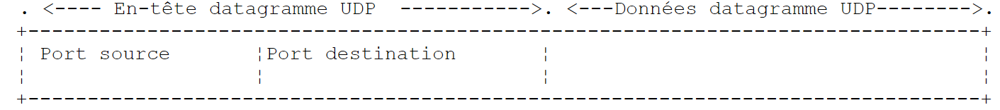
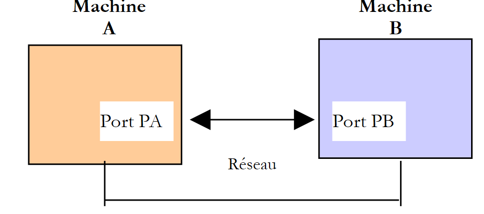
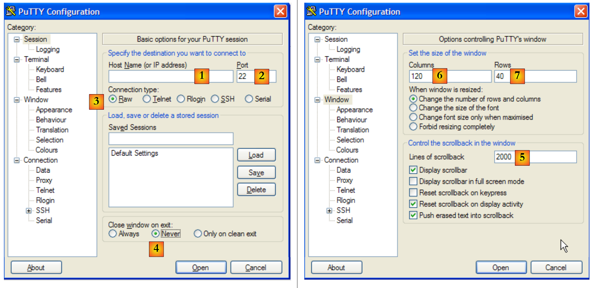
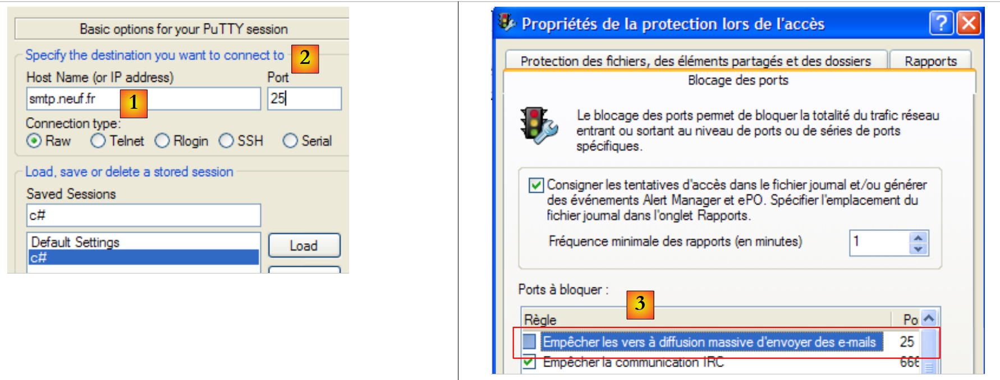
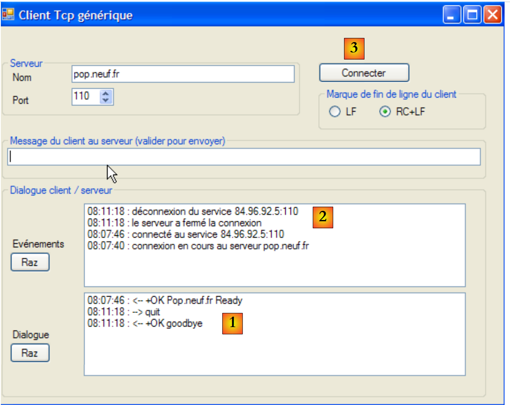
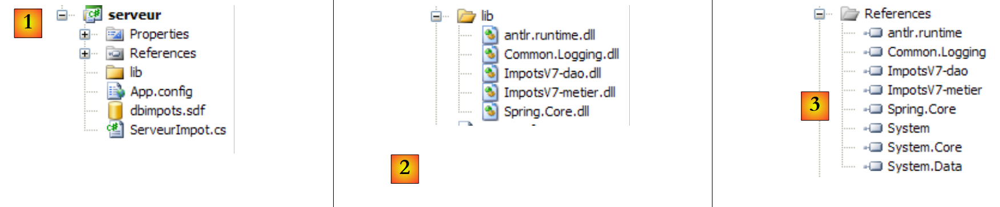
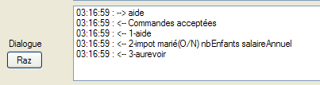

11. Programmazione Internet
11.1. Informazioni generali
11.1.1. I protocolli Internet
Forniamo qui un'introduzione ai protocolli di comunicazione Internet, noti anche come suite di protocolli TCP/IP (Transfer Control Protocol / Internet Protocol), dal nome dei due protocolli principali. Potrebbe essere utile per il lettore avere una comprensione generale di come funzionano le reti, e in particolare dei protocolli TCP/IP, prima di affrontare la realizzazione di applicazioni distribuite. Il testo che segue è una traduzione parziale di un testo tratto dal documento "Lan Workplace for Dos - Administrator's Guide" di NOVELL, documento risalente ai primi anni '90.
Il concetto generale di creazione di una rete di computer eterogenei deriva dalla ricerca condotta dalla DARPA (Defense Advanced Research Projects Agency) negli Stati Uniti. La DARPA ha sviluppato la suite di protocolli nota come TCP/IP, che consente a macchine eterogenee di comunicare tra loro. Questi protocolli sono stati testati su una rete chiamata ARPAnet, rete che in seguito è diventata INTERNET. I protocolli TCP/IP definiscono formati e regole di trasmissione e ricezione indipendenti dall'organizzazione della rete e dall'hardware utilizzato.
La rete progettata dalla DARPA e gestita dai protocolli TCP/IP è una rete DARPA a commutazione di pacchetti. Una rete di questo tipo trasmette le informazioni attraverso la rete in piccoli blocchi chiamati pacchetti. Pertanto, se un computer trasmette un file di grandi dimensioni, questo verrà suddiviso in parti più piccole, che saranno inviate attraverso la rete per essere ricomposte una volta giunte a destinazione. Il TCP/IP definisce il formato di questi pacchetti, ovvero:
- origine del pacchetto
- destinazione
- lunghezza
- tipo
11.1.2. Il modello OSI
I protocolli TCP/IP seguono approssimativamente il modello di rete aperto denominato OSI (Open Systems Interconnection Reference Model) definito dall'ISO (International Standards Organization). Questo modello descrive una rete ideale in cui la comunicazione tra macchine può essere rappresentata da un modello a sette livelli:
 |
Ogni livello riceve servizi dal livello sottostante e offre i propri al livello superiore. Supponiamo che due applicazioni su macchine diverse A e B vogliano comunicare: lo fanno a livello Applicazione. Non hanno bisogno di conoscere tutti i dettagli di come funziona la rete: ogni applicazione passa le informazioni che desidera trasmettere al livello sottostante: la Presentazione. L'applicazione deve solo conoscere le regole per interfacciarsi con la Presentazione.
Una volta che le informazioni presenti nella Presentazione sono state trasferite alla Sessione e così via, fino a quando non raggiungono il supporto fisico e vengono trasmesse fisicamente al computer di destinazione. Lì subiscono il processo inverso rispetto a quello a cui sono state sottoposte sul computer mittente.
A ogni livello, il processo di invio responsabile della trasmissione delle informazioni le invia a un processo di ricezione sull'altra macchina appartenente allo stesso livello. Lo fa secondo determinate regole note come livello di protocollo. Questo ci fornisce il seguente diagramma di comunicazione finale:
 |
Il ruolo dei diversi livelli è il seguente:
Garantisce la trasmissione dei bit su un supporto fisico. Questo livello comprende le apparecchiature terminali di elaborazione dati (E.T.T.D.), quali terminali o computer, nonché le apparecchiature di terminazione dei circuiti dati (E.T.C.D.), quali modulatori/demodulatori, multiplexer o concentratori. I punti di interesse a questo livello sono:
| |
Nasconde le caratteristiche del livello fisico. Rileva e corregge gli errori di trasmissione. | |
Gestisce il percorso seguito dalle informazioni inviate sulla rete. Questo processo è chiamato routing: determinare il percorso che un'informazione deve seguire per raggiungere la sua destinazione. | |
Consente la comunicazione tra due applicazioni, mentre i livelli precedenti consentivano solo la comunicazione da macchina a macchina. Un servizio fornito da questo livello è il multiplexing: il livello di trasporto può utilizzare la stessa connessione di rete (da macchina a macchina) per trasmettere informazioni appartenenti a diverse applicazioni. | |
Questo livello contiene servizi che consentono a un'applicazione di aprire e mantenere una sessione di lavoro su una macchina remota. | |
Il suo scopo è standardizzare la rappresentazione dei dati su macchine diverse. In questo modo, i dati provenienti dalla macchina A saranno "confezionati" dalla Presentazione della macchina A, in un formato standard, prima di essere inviati in rete. Una volta raggiunta la macchina di Presentazione B, che li riconoscerà grazie al loro formato standard, saranno confezionati in un altro modo in modo che l'applicazione della macchina B possa riconoscerli. | |
A questo livello, troviamo applicazioni che sono generalmente vicine all'utente, come la posta elettronica e il trasferimento di file. |
11.1.3. Il modello TCP/IP
Il modello OSI è un modello ideale che non è mai stato realizzato. La suite di protocolli TCP/IP si avvicina ad esso nella forma seguente:
 |
Livello fisico
Per le reti locali, si utilizzano generalmente Ethernet o Token-Ring. Qui presentiamo solo la tecnologia Ethernet.
Ethernet
Questo è il nome dato a una tecnologia LAN a commutazione di pacchetti inventata presso il PARC Xerox nei primi anni '70 e standardizzata da Xerox, Intel e Digital Equipment nel 1978. La rete è costituita fisicamente da un cavo coassiale con un diametro di circa 1,27 cm e una lunghezza massima di 500 m. Può essere estesa tramite ripetitori; non è possibile che due macchine siano separate da più di due ripetitori. Il cavo è passivo: tutti gli elementi attivi si trovano sulle macchine collegate al cavo. Ogni macchina è collegata al cavo tramite una scheda di accesso alla rete che comprende:
- un trasmettitore (ricetrasmettitore) che rileva la presenza di segnali sul cavo e converte i segnali analogici in digitali e viceversa.
- un accoppiatore che riceve i segnali digitali dal trasmettitore e li trasmette al computer per l'elaborazione, o viceversa.
Le caratteristiche principali della tecnologia Ethernet sono le seguenti:
- Capacità di 10 Megabit al secondo.
- Topologia a bus: tutte le macchine sono collegate allo stesso cavo
 |
- Rete di trasmissione - Una macchina trasmittente trasferisce le informazioni sul cavo indicando l’indirizzo della macchina di destinazione. Tutte le macchine collegate ricevono quindi queste informazioni, e solo quella a cui sono destinate le conserva.
- Il metodo di accesso è il seguente: il trasmettitore che desidera trasmettere ascolta il cavo; rileva quindi la presenza o l'assenza di un'onda portante, il che significherebbe che è in corso una trasmissione. Si tratta del CSMA (Carrier Sense Multiple Access). In assenza di un'onda portante, un trasmettitore può decidere di trasmettere a sua volta . Diversi trasmettitori possono prendere questa decisione. I segnali trasmessi si sovrappongono: si parla di collisione. Il trasmettitore rileva questa situazione: mentre trasmette sul cavo, ascolta ciò che effettivamente vi transita. Se rileva che le informazioni che transitano sul cavo non sono quelle che ha trasmesso, deduce che vi è una collisione e interrompe la trasmissione. Gli altri trasmettitori faranno lo stesso. Ciascuno riprenderà la trasmissione dopo un tempo casuale che dipende da ciascun trasmettitore. Questa tecnica è chiamata CD (Collision Detect). Il metodo di accesso è chiamato CSMA/CD.
- Indirizzamento a 48 bit. Ogni macchina ha un indirizzo, chiamato qui indirizzo fisico, che è scritto sulla scheda che la collega al cavo. Questo indirizzo è chiamato Ethernet della macchina.
Livello di rete
Questo livello include i protocolli IP, ICMP, ARP e RARP.
Trasmette i pacchetti tra due nodi di rete | |
L'ICMP consente la comunicazione tra il programma del protocollo IP di una macchina e quello di un'altra. Si tratta quindi di un protocollo di scambio di messaggi all'interno del protocollo IP. | |
mappa l'indirizzo della macchina Internet all'indirizzo fisico della macchina | |
mappa l'indirizzo fisico del computer all'indirizzo Internet del computer |
Livelli di trasporto/sessione
Questo livello include i seguenti protocolli:
Garantisce un trasferimento affidabile delle informazioni tra due clienti | |
Garantisce la consegna non affidabile delle informazioni tra due clienti |
Livelli Applicazione/Presentazione/Sessione
Esistono qui diversi protocolli:
Emulatore di terminale che consente alla macchina A di connettersi alla macchina B come terminale | |
consente il trasferimento di file | |
consente il trasferimento di file | |
consente lo scambio di messaggi tra gli utenti della rete | |
trasforma il nome di un computer in un indirizzo IP | |
creato da Sun Microsystems, specifica uno standard di rappresentazione dei dati indipendente dal sistema operativo | |
definito anch'esso da Sun, è un protocollo di comunicazione tra applicazioni remote, indipendente dal livello di trasporto. Questo protocollo è importante: solleva il programmatore dalla necessità di conoscere i dettagli del livello di trasporto e rende le applicazioni portabili. Questo protocollo si basa sul protocollo XDR | |
, anch'esso definito da Sun, questo protocollo permette a una macchina di "vedere" il file system di un'altra. Si basa sul precedente protocollo RPC |
11.1.4. Come funzionano i protocolli Internet
Le applicazioni sviluppate nell'ambiente TCP/IP utilizzano generalmente diversi protocolli di questo ambiente. Un programma applicativo comunica con il livello di protocollo più alto. Questo trasmette le informazioni al livello sottostante e così via fino a raggiungere il supporto fisico. Qui, le informazioni vengono trasferite fisicamente alla macchina dove attraversano nuovamente gli stessi livelli, questa volta in direzione opposta, fino a raggiungere l'applicazione a cui sono state inviate. Il diagramma seguente mostra il percorso delle informazioni:
 |
Facciamo un esempio: l'applicazione FTP, definita nell'Applicazione che consente il trasferimento di file tra macchine.
- L'applicazione invia una sequenza di byte da trasmettere al livello di trasporto.
- Il livello di trasporto suddivide questa sequenza di byte in segmenti TCP e aggiunge il numero di segmento all'inizio di ciascun segmento. I segmenti vengono passati al livello di rete, gestito dal protocollo IP.
- Il livello IP crea un pacchetto che incapsula il segmento TCP ricevuto. All'inizio di questo pacchetto, inserisce gli indirizzi Internet delle macchine di origine e di destinazione. Determina inoltre l'indirizzo fisico della macchina di destinazione. Tutto questo viene trasmesso al collegamento dati e al collegamento fisico, ovvero alla scheda di rete che collega la macchina alla rete fisica.
- Qui, il pacchetto IP viene a sua volta incapsulato in un frame e inviato al destinatario tramite il cavo.
- Sulla macchina ricevente, il collegamento fisico e di collegamento dati fa l'opposto: decapsula il pacchetto IP dal frame fisico e lo passa al livello IP.
- Il livello IP verifica che il pacchetto sia corretto: calcola una somma basata sui bit ricevuti (checksum), che deve essere presente nell'intestazione del pacchetto. In caso contrario, il pacchetto viene rifiutato.
- Se il pacchetto viene dichiarato corretto, il livello IP decapsula il segmento TCP in esso contenuto e lo passa al livello di trasporto IP.
- Il livello di trasporto, il livello TCP nel nostro esempio, esamina il numero del segmento per ripristinare il corretto ordine dei segmenti.
- Calcola inoltre un checksum per il segmento TCP. Se risulta corretto, il livello TCP invia un riconoscimento alla macchina di origine, altrimenti il segmento TCP viene rifiutato.
- Tutto ciò che resta da fare al livello TCP è trasmettere la parte di dati del segmento all'applicazione di destinazione nel livello superiore.
11.1.5. Affrontare i problemi su Internet
Un nodo di una rete può essere un computer, una stampante intelligente, un file server, in pratica qualsiasi cosa in grado di comunicare utilizzando i protocolli TCP/IP. Ogni nodo ha un indirizzo fisico il cui formato dipende dal tipo di rete. Su una rete Ethernet, l'indirizzo fisico è codificato in 6 byte. Un indirizzo di rete X25 è un numero di 14 cifre.
L'indirizzo Internet di un nodo è un indirizzo logico: è indipendente dall'hardware e dalla rete utilizzati. Si tratta di un indirizzo di 4 byte che identifica sia una rete locale che un nodo su quella rete. L'indirizzo Internet è solitamente rappresentato da 4 numeri, i valori dei 4 byte, separati da un punto. Ad esempio, l'indirizzo della macchina Lagaffe presso la Facoltà di Scienze di Angers è 193.49.144.1, e quello della macchina Liny è 193.49.144.9. Ne deduciamo che l'indirizzo Internet della rete locale è 193.49.144.0. Su questa rete possiamo avere fino a 254 nodi.
Poiché gli indirizzi Internet o IP sono indipendenti dalla rete, un computer sulla rete A può comunicare con un computer sulla rete B indipendentemente dal tipo di rete su cui si trova: deve solo conoscere il suo indirizzo IP. Il protocollo IP su ciascuna rete si occupa della conversione IP <--> indirizzo fisico, in entrambe le direzioni.
Gli indirizzi IP devono essere tutti diversi. In Francia, l'INRIA è responsabile dell'assegnazione degli indirizzi IP. Infatti, questa organizzazione assegna un indirizzo alla rete locale, ad esempio 193.49.144.0 per la rete della Facoltà di Scienze di Angers. L'amministratore di rete può quindi assegnare gli indirizzi IP da 193.49.144.1 a 193.49.144.254 a sua discrezione. Questo indirizzo viene solitamente scritto in un file speciale su ogni macchina collegata alla rete.
11.1.5.1. Classi di indirizzi IP
Un indirizzo IP è una sequenza di 4 byte, spesso indicata come I1.I2.I3.I4, che in realtà contiene due indirizzi:
- indirizzo di rete
- l'indirizzo di un nodo in questa rete
A seconda delle dimensioni di questi due campi, gli indirizzi IP si dividono in 3 classi: classi A, B e C.
Classe A
L'indirizzo IP: I1.I2.I3.I4 ha la forma R1.N1.N2.N3 dove
R1 è l'indirizzo di rete
N1.N2.N3 è l'indirizzo di una macchina in questa rete
Più precisamente, la forma di un indirizzo IP di classe A è la seguente:
L'indirizzo di rete è di 7 bit e l'indirizzo del nodo è di 24 bit. Possiamo quindi avere 127 reti di classe A, ciascuna con un massimo di 224 nodi.
Classe B
Qui, l'indirizzo IP: I1.I2.I3.I4 ha la forma R1.R2.N1.N2 dove
R1.R2 è l'indirizzo di rete
N1.N2 è l'indirizzo di una macchina in questa rete
Più precisamente, la forma di un indirizzo IP di classe B è la seguente:
L'indirizzo di rete è composto da 2 byte (esattamente 14 bit), così come l'indirizzo del nodo. È quindi possibile avere 2¹⁴ reti di classe B, ciascuna delle quali comprende fino a 2¹⁶ nodi.
Classe C
In questa classe, l'indirizzo IP: I1.I2.I3.I4 ha la forma R1.R2.R3.N1 dove
R1.R2.R3 è l'indirizzo di rete
N1 è l'indirizzo di una macchina in questa rete
Più precisamente, la forma di un indirizzo IP di classe C è la seguente:
 |
L'indirizzo di rete è di 3 byte (meno 3 bit) e l'indirizzo del nodo è di 1 byte. Possiamo quindi avere 221 reti di classe C con un massimo di 256 nodi.
L'indirizzo della macchina Lagaffe della Facoltà di Scienze di Angers è 193.49.144.1; si può notare che il byte più significativo è 193, ovvero 11000001 in binario. Ciò significa che la rete è di classe C.
Indirizzi riservati
- Alcuni indirizzi IP sono indirizzi di rete piuttosto che indirizzi di nodi nella rete. Si tratta di indirizzi in cui l'indirizzo del nodo è impostato su 0. Ad esempio, l'indirizzo 193.49.144.0 è l'indirizzo IP della rete della Faculté des Sciences d'Angers. Di conseguenza, nessun nodo su una rete può avere l'indirizzo zero.
- Quando l'indirizzo del nodo in un indirizzo IP contiene solo 1, si ha un indirizzo di broadcast: questo indirizzo designa tutti i nodi della rete.
- In una rete di classe C, che teoricamente consente 28=256 nodi, se rimuoviamo i due indirizzi proibiti, ci rimangono 254 indirizzi autorizzati.
11.1.5.2. Protocolli di conversione Indirizzo Internet <--> Indirizzo fisico
Abbiamo visto che quando le informazioni vengono trasmesse da una macchina all'altra, vengono incapsulate in pacchetti mentre passano attraverso il livello IP. Questi assumono la seguente forma:
 |
Il pacchetto IP contiene quindi gli indirizzi Internet delle macchine di origine e di destinazione. Quando questo pacchetto viene trasmesso al livello responsabile dell'invio sulla rete fisica, vi vengono aggiunte altre informazioni per formare il frame fisico che verrà infine inviato sulla rete. Ad esempio, il formato di un frame su una rete Ethernet è il seguente:
 |
Il frame finale contiene gli indirizzi fisici delle macchine di origine e di destinazione. Come vengono ottenuti?
La macchina mittente, conoscendo l'indirizzo IP della macchina con cui desidera comunicare, ottiene l'indirizzo fisico di quest'ultima utilizzando uno speciale protocollo chiamato ARP (Address Resolution Protocol).
- Invia un tipo speciale di pacchetto chiamato pacchetto ARP, contenente l’indirizzo IP del computer di cui stiamo cercando l’indirizzo fisico. Si è anche premurata di includere il proprio indirizzo IP, oltre al proprio indirizzo fisico.
- Questo pacchetto viene inviato a tutti i nodi della rete.
- Questi riconoscono la natura speciale del pacchetto. Il nodo che riconosce il proprio indirizzo IP nel pacchetto risponde inviando al mittente del pacchetto il proprio indirizzo fisico. Come può farlo? Ha trovato gli indirizzi IP e fisico del mittente nel pacchetto.
- Il mittente riceve l'indirizzo fisico che stava cercando. Lo memorizza in modo da poterlo utilizzare in seguito se ha bisogno di inviare altri pacchetti allo stesso destinatario.
L'indirizzo IP di una macchina è normalmente registrato in uno dei suoi file, che può consultare per scoprirlo. Questo indirizzo può essere modificato modificando il file. L'indirizzo fisico, invece, è memorizzato in una memoria sulla scheda di rete e non può essere modificato.
Quando un amministratore desidera riorganizzare la propria rete, potrebbe dover modificare gli indirizzi IP di tutti i nodi e quindi modificare i vari file di configurazione dei diversi nodi. Ciò può risultare noioso e soggetto a errori se le macchine sono numerose. Un metodo consiste nel non assegnare un indirizzo IP alle macchine: nel file in cui la macchina dovrebbe trovare il proprio indirizzo IP viene scritto un codice speciale. Scoprendo di non avere un indirizzo IP, la macchina lo richiede utilizzando un protocollo chiamato RARP (Reverse Address Resolution Protocol). Invia quindi un pacchetto speciale sulla rete, chiamato pacchetto RARP, analogo al pacchetto ARP di cui sopra, nel quale inserisce il proprio indirizzo fisico. Questo pacchetto viene inviato a tutti i nodi, che riconoscono un pacchetto RARP. Uno di essi, chiamato server RARP, dispone di un file contenente la corrispondenza tra indirizzo fisico e indirizzo IP di tutti i nodi. Risponde quindi al mittente del pacchetto RARP, inviandogli il suo indirizzo IP. Un amministratore che desideri riconfigurare la propria rete deve semplicemente modificare il file di corrispondenza del server RARP. Questo dovrebbe normalmente avere un indirizzo IP fisso, che dovrebbe essere in grado di scoprire senza dover utilizzare lui stesso il protocollo RARP.
11.1.6. Il livello di rete IP di Internet
Il protocollo IP (Internet Protocol) definisce la forma che i pacchetti devono assumere e come devono essere gestiti quando vengono inviati o ricevuti. Questo particolare tipo di pacchetto è chiamato datagramma IP. Abbiamo già presentato:
 |
La cosa importante è che, oltre ai dati da trasmettere, il datagramma IP contiene gli indirizzi Internet delle macchine di origine e di destinazione. In questo modo, la macchina ricevente sa chi le sta inviando un messaggio.
A differenza di un frame di rete, la cui lunghezza è determinata dalle caratteristiche fisiche della rete su cui viaggia, la lunghezza del datagramma IP è fissata dal software e sarà quindi la stessa su reti fisiche diverse. Come abbiamo visto, il datagramma IP viene incapsulato in un frame fisico mentre scende dal livello di rete al livello fisico. Abbiamo fornito l'esempio del frame fisico di una rete Ethernet:
I frame fisici viaggiano da un nodo all'altro verso la loro destinazione, che potrebbe non trovarsi sulla stessa rete fisica del computer mittente. Il pacchetto IP può quindi essere incapsulato in successione in diversi frame fisici nei nodi che collegano due diversi tipi di rete. È anche possibile che il pacchetto IP sia troppo grande per essere incapsulato in un frame fisico. Il software IP del nodo in cui si verifica questo problema suddivide quindi il pacchetto IP in frammenti secondo regole precise, ciascuno dei quali viene poi inviato sulla rete fisica. Essi non vengono riassemblati fino a quando non raggiungono la loro destinazione finale.
11.1.6.1. Routing
L'instradamento è il metodo utilizzato per indirizzare i pacchetti IP verso la loro destinazione. Esistono due metodi: l'instradamento diretto e l'instradamento indiretto.
Routing diretto
Il routing diretto si riferisce all'instradamento di un pacchetto IP direttamente dal mittente al destinatario all'interno della stessa rete:
- La macchina che invia un datagramma IP possiede l'indirizzo IP del destinatario.
- Ottiene l'indirizzo fisico di quest'ultimo tramite il protocollo ARP o dalle proprie tabelle, se tale indirizzo è già stato ottenuto.
- Invia il pacchetto sulla rete a questo indirizzo fisico.
Routing indiretto
Il routing indiretto si riferisce all'instradamento di un pacchetto IP verso una destinazione su una rete diversa da quella a cui appartiene il mittente. In questo caso, le parti relative all'indirizzo di rete degli indirizzi IP delle macchine di origine e di destinazione sono diverse. La macchina di origine riconosce questo punto. Invia quindi il pacchetto a un nodo speciale chiamato router (router), il nodo che collega una rete locale ad altre reti e il cui indirizzo IP trova nelle sue tabelle, un indirizzo inizialmente ottenuto in un file o nella memoria permanente, oppure tramite informazioni che circolano sulla rete.
Un router è collegato a due reti e possiede un indirizzo IP all'interno di queste due reti.
 |
Nel nostro esempio sopra riportato:
. La rete n. 1 ha l'indirizzo IP 193.49.144.0 e la rete n. 2 ha l'indirizzo 193.49.145.0.
. All'interno della rete n. 1, il router ha l'indirizzo 193.49.144.6, mentre all'interno della rete n. 2 ha l'indirizzo 193.49.145.3.
Il ruolo del router è quello di inserire il pacchetto IP che riceve, contenuto in un frame fisico tipico della rete n. 1, in un frame fisico in grado di circolare sulla rete n. 2. Se l'indirizzo IP del destinatario del pacchetto si trova nella rete n. 2, il router invierà il pacchetto direttamente a esso, altrimenti lo invierà a un altro router, collegando la rete n. 2 alla rete n. 3, e così via.
11.1.6.2. Messaggi di errore e di controllo
Sempre nel livello di rete, allo stesso livello del protocollo IP, c'è l'ICMP (Internet Control Message Protocol). Viene utilizzato per inviare messaggi sul funzionamento interno della rete: nodi inattivi, congestione su un router, ecc... I messaggi ICMP vengono incapsulati in pacchetti IP e inviati sulla rete. I livelli IP dei vari nodi intraprendono le azioni appropriate in base ai messaggi ICMP che ricevono. In questo modo, l'applicazione stessa non vede mai questi problemi specifici della rete.
Un nodo utilizzerà le informazioni ICMP per aggiornare le proprie tabelle di routing.
11.1.7. Il livello di trasporto: protocolli UDP e TCP
11.1.7.1. Il protocollo UDP: User Datagram Protocol
Il protocollo UDP consente uno scambio di dati non affidabile tra due punti, ovvero non garantisce il corretto instradamento di un pacchetto verso la sua destinazione. L'applicazione può gestirlo autonomamente, ad esempio attendendo un riconoscimento di ricezione dopo l'invio di un messaggio, prima di inviare quello successivo.
Per il momento, a livello di rete, abbiamo parlato di indirizzi IP delle macchine. Su una macchina possono coesistere contemporaneamente diversi processi, e tutti possono comunicare tra loro. Quando si invia un messaggio, è quindi necessario specificare non solo l'indirizzo IP della macchina di destinazione, ma anche il "nome" del processo di destinazione. Questo nome è in realtà un numero, chiamato numero di porta. Alcuni numeri sono riservati alle applicazioni standard: la porta 69 per il tftp (trivial file transfer protocol), ad esempio.
I pacchetti gestiti dal protocollo UDP sono chiamati anche datagrammi. Hanno la seguente forma:
 |
Questi datagrammi sono incapsulati in pacchetti IP, quindi in frame fisici.
11.1.7.2. Il protocollo TCP: Transfer Control Protocol
Per comunicazioni sicure, il protocollo UDP è insufficiente: lo sviluppatore dell'applicazione deve sviluppare un proprio protocollo per verificare il corretto instradamento dei pacchetti. Il protocollo TCP (Transfer Control Protocol) evita questi problemi. Le sue caratteristiche sono le seguenti:
- Il processo che desidera inviare dati stabilisce innanzitutto una connessione con il processo che riceverà le informazioni che sta per inviare. Questa connessione viene stabilita tra una porta sulla macchina mittente e una porta sulla macchina ricevente. Viene così creato un percorso virtuale tra le due porte, che sarà riservato ai due processi che hanno stabilito la connessione.
- Tutti i pacchetti inviati dal processo di origine seguono questo percorso virtuale e arrivano nell'ordine in cui sono stati inviati, cosa che non era garantita nel protocollo UDP, poiché i pacchetti potevano seguire percorsi diversi.
- Le informazioni inviate sono continue. Il processo di trasmissione invia le informazioni al proprio ritmo. Queste informazioni non vengono necessariamente inviate immediatamente: il protocollo TCP attende di avere informazioni sufficienti per inviarle. Esse vengono memorizzate in una struttura chiamata segmento TCP. Una volta completato, questo segmento viene trasmesso al livello IP, dove viene incapsulato in un pacchetto IP.
- Ogni segmento inviato dal protocollo TCP è numerato. Il protocollo TCP ricevente verifica di aver ricevuto i segmenti in ordine. Per ogni segmento ricevuto correttamente, invia un riconoscimento al mittente.
- Quando quest'ultimo lo riceve, ne informa il processo di invio. Ciò significa che il processo di invio sa che un segmento è arrivato a destinazione, cosa che non era possibile con il protocollo UDP.
- Se, dopo un certo tempo, il protocollo TCP che ha trasmesso un segmento non riceve un riconoscimento, ritrasmette il segmento in questione, garantendo così la qualità del servizio di instradamento delle informazioni.
- Il circuito virtuale stabilito tra i due processi in comunicazione è full-duplex: ciò significa che le informazioni possono fluire in entrambe le direzioni. In questo modo, il processo di destinazione può inviare conferme mentre il processo di origine continua a inviare informazioni. Ciò consente al protocollo TCP di origine, ad esempio, di inviare diversi segmenti senza attendere una conferma. Se dopo un certo tempo si rende conto di non aver ricevuto la conferma di un determinato segmento n, riprenderà la trasmissione del segmento a quel punto.
11.1.8. Il livello delle applicazioni
Al di sopra dei protocolli UDP e TCP, esistono vari protocolli standard:
TELNET
Questo protocollo consente a un utente su una macchina A della rete di connettersi alla macchina B (spesso chiamata macchina host). TELNET emula un terminale universale sulla macchina A. L'utente si comporta quindi come se avesse un terminale collegato alla macchina B. Telnet si basa sul protocollo TCP.
FTP: (File Transfer Protocol)
Questo protocollo consente lo scambio di file tra due macchine remote, nonché operazioni sui file quali la creazione di directory. Si basa sul protocollo TCP.
TFTP: (Trivial File Transfer Protocol)
Questo protocollo è una variante dell'FTP. Si basa sul protocollo UDP ed è meno sofisticato dell'FTP.
DNS: (Domain Name System)
Quando un utente desidera scambiare file con una macchina remota, ad esempio tramite FTP, deve conoscere l'indirizzo Internet di tale macchina. Ad esempio, per eseguire un'operazione FTP sulla macchina Lagaffe dell'Università di Angers, è necessario eseguire FTP come segue: FTP 193.49.144.1
Ciò richiederebbe una mappatura tra macchina <--> indirizzo IP. In questa mappatura, le macchine sarebbero probabilmente designate da nomi simbolici quali:
macchina DPX2/320 dell'Università di Angers
macchina sun dell'ISERPA di Angers
Chiaramente, sarebbe più comodo riferirsi a una macchina per nome piuttosto che per il suo indirizzo IP. Poi c'è il problema dell'unicità dei nomi: ci sono milioni di macchine interconnesse. Si potrebbe immaginare un organismo centralizzato che assegni i nomi. Ciò sarebbe senza dubbio piuttosto macchinoso. Il controllo dei nomi è stato infatti distribuito nei **vari settori**. Ogni dominio è gestito da un'organizzazione molto piccola, libera di scegliere i nomi delle proprie macchine. Ad esempio, le macchine in Francia appartengono al dominio **en**, gestito dall'Inria di Parigi. Per semplificare le cose, distribuiamo ulteriormente il controllo: i domini vengono creati all'interno di **en**. L'Università di Angers appartiene a **univ-Angers**. Il dipartimento che gestisce questo dominio è libero di dare un nome alle macchine sulla rete dell'Université d'Angers. Per il momento, questo dominio non è stato suddiviso. Ma in una grande università con molte macchine in rete, potrebbe esserlo.
La macchina DPX2/320 dell'Università di Angers è stata chiamata *Lagaffe,* mentre un PC 486DX50 è stato chiamato *liny*. Come si fa a fare riferimento a queste macchine dall'esterno? Specificando la gerarchia di domini a cui appartengono. Ad esempio, il nome completo della macchina Lagaffe sarebbe:
**Lagaffe.univ-Angers.fr**
All'interno dei domini, si possono usare nomi relativi. Quindi, all'interno del dominio **en** e al di fuori del campo **univ-Angers**, la macchina Lagaffe può essere indicata come
**Lagaffe.univ-Angers**
Infine, all'interno di *univ-Angers*, è possibile fare riferimento ad essa semplicemente tramite
**Lagaffe**
Un'applicazione può quindi fare riferimento a una macchina per nome. Alla fine, è comunque necessario ottenere l'indirizzo Internet della macchina. Come si ottiene? Supponiamo di voler comunicare dalla macchina A alla macchina B.
- Se la macchina B appartiene allo stesso dominio della macchina A, probabilmente troveremo il suo indirizzo IP in un file sulla macchina A.
- Altrimenti, la macchina A troverà un elenco di alcuni server dei nomi con i relativi indirizzi IP. Un server dei nomi è responsabile della mappatura del nome di una macchina al suo indirizzo IP. La macchina A invierà una richiesta speciale al primo server dei nomi nel suo elenco, chiamata richiesta DNS, includendo il nome della macchina che sta cercando. Se il server interrogato ha questo nome nei propri registri, invierà alla macchina A l'indirizzo IP corrispondente. In caso contrario, il server troverà a sua volta un elenco di server dei nomi nei propri file, che invierà al computer A affinché possa interrogarli. Lo farà quindi. In questo modo, verrà interrogato un certo numero di server dei nomi, non in modo casuale, ma in modo tale da ridurre al minimo il numero di interrogazioni. Se il computer viene finalmente trovato, la risposta tornerà al computer A.
XDR: (Rappresentazione dei dati esterni)
Creato da Sun Microsystems, questo protocollo definisce una rappresentazione standard dei dati indipendente dalla piattaforma.
RPC: (Remote Procedure Call)
Definito anch'esso da Sun, si tratta di un protocollo di comunicazione tra applicazioni remote, indipendente dal livello di trasporto. Questo protocollo è importante: solleva il programmatore dalla necessità di conoscere i dettagli del livello di trasporto e rende le applicazioni portabili. Questo protocollo si basa sul protocollo XDR
NFS: Network File System
Sempre definito da Sun, questo protocollo permette a una macchina di "vedere" il file system di un'altra. Si basa sul precedente protocollo RPC.
11.1.9. Conclusione
In questa introduzione abbiamo presentato alcune nozioni di base sui protocolli Internet. Per un approfondimento su questo argomento, si consiglia di leggere l'eccellente libro di Douglas Comer:
Titolo TCP/IP: Architettura, protocolli, applicazioni.
Autore Douglas COMER
Editore InterEditions
11.2. Le classi .NET per la gestione degli indirizzi IP
Una macchina sulla rete Internet è definita in modo univoco da un indirizzo IP (Internet Protocol), che può assumere due forme:
- IPv4 : codificato su 32 bit e rappresentato da una stringa della forma "I1.I2.I3.I4" dove In è un numero compreso tra 1 e 254. Questi sono attualmente gli indirizzi IP più comuni.
- IPv6: codificato su 128 bit e rappresentato da una stringa del tipo "[I1.I2.I3.I4.I5.I6.I7.I8]", dove In è una stringa di 4 cifre esadecimali. In questo documento non useremo indirizzi IPv6.
Una macchina può anche essere definita da un nome altrettanto univoco. Questo nome non è obbligatorio, poiché le applicazioni finiscono sempre per utilizzare gli indirizzi IP delle macchine. È più facile, ad esempio, richiedere l'URL da un browser http://www.ibm.com piuttosto che l'URL http://129.42.17.99, sebbene entrambi i metodi siano possibili.
Una macchina può avere diversi indirizzi IP se è fisicamente connessa a più reti contemporaneamente. In tal caso, ha un indirizzo IP su ciascuna rete.
Un indirizzo IP può essere rappresentato in due modi in .NET:
- come stringa "I1.I2.I3.I4" o "[I1.I2.I3.I4.I5.I6.I7.I8]"
- sotto forma di un IPAddress
La classe IPAddress
Tra i metodi M, le proprietà P e le costanti C di IPAddress, vi sono i seguenti:
P | famiglia di indirizzi IP. Il tipo AddressFamily è un'enumerazione. I due valori più comuni sono: AddressFamily.InterNetwork : per un indirizzo IPv4 AddressFamily.InterNetworkV6: per un indirizzo IPv6 | |
C | Indirizzo IP "0.0.0.0". Quando un servizio è associato a questo indirizzo, significa che accetta i client su tutti gli indirizzi IP del computer su cui opera. | |
C | IP "127.0.0.1". Conosciuto come "indirizzo di loopback". Quando un servizio è associato a questo indirizzo, significa che accetta solo i client che si trovano sulla stessa macchina . | |
C | Indirizzo IP "255.255.255.255". Quando un servizio è associato a questo indirizzo, significa che non accetta alcun cliente. | |
M | tenta di convertire l'indirizzo IP ipString nel formato "I1.I2.I3.I4" sotto forma di un oggetto IPAddress. Restituisce true se l'operazione ha avuto esito positivo. | |
M | restituisce true se l'indirizzo IP è "127.0.0.1" | |
M | visualizza l'indirizzo IP come "I1.I2.I3.I4" o "[I1.I2.I3.I4.I5.I6.I7.I8]" |
L'associazione tra indirizzo IP e nome macchina è fornita da un servizio Internet distribuito denominato DNS (Domain Name System). I metodi statici del DNS consentono di stabilire l'associazione tra indirizzo IP e nome macchina:
restituisce un oggetto IPHostEntry a partire da un indirizzo IP sotto forma di stringa o da un nome macchina. Genera un'eccezione se la macchina non viene trovata. | |
restituisce un oggetto IPHostEntry a partire da un indirizzo IP di tipo IPAddress. Genera un'eccezione se la macchina non viene trovata. | |
restituisce il nome del computer su cui è in esecuzione il programma che esegue questa istruzione | |
restituisce gli indirizzi IP del computer identificato dal suo nome o da uno dei suoi indirizzi IP. |
Un'istanza IPHostEntry incapsula indirizzi IP, alias e nomi di macchine. Il tipo IPHostEntry è il seguente:
P | tabella degli indirizzi IP dei computer | |
P | alias DNS della macchina. Si tratta dei nomi corrispondenti ai vari indirizzi IP della macchina. | |
P | nome host principale della macchina |
Si consideri il seguente programma che visualizza il nome della macchina su cui è in esecuzione e fornisce poi in modo interattivo le corrispondenze tra indirizzi IP e nomi macchina:
using System;
using System.Net;
namespace Chap9 {
class Program {
static void Main(string[] args) {
// displays the name of the local machine
// then interactively provides information on network machines
// identified by name or address IP
// local machine
Console.WriteLine("Machine Locale= {0}" ,Dns.GetHostName());
// interactive Q&A
string machine;
IPHostEntry ipHostEntry;
while (true) {
// enter the name or IP address of the machine you are looking for
Console.Write("Machine recherchée (rien pour arrêter) : ");
machine = Console.ReadLine().Trim().ToLower();
// finished?
if (machine == "") return;
// management exception
try {
// machine search
ipHostEntry = Dns.GetHostEntry(machine);
// machine name
Console.WriteLine("Machine : " + ipHostEntry.HostName);
// the machine's IP addresses
Console.Write("Adresses IP : {0}" , ipHostEntry.AddressList[0]);
for (int i = 1; i < ipHostEntry.AddressList.Length; i++) {
Console.Write(", {0}" , ipHostEntry.AddressList[i]);
}
Console.WriteLine();
// machine aliases
if (ipHostEntry.Aliases.Length != 0) {
Console.Write("Alias : {0}" , ipHostEntry.Aliases[0]);
for (int i = 1; i < ipHostEntry.Aliases.Length; i++) {
Console.Write(", {0}" , ipHostEntry.Aliases[i]);
}
Console.WriteLine();
}
} catch {
// the machine doesn't exist
Console.WriteLine("Impossible de trouver la machine [{0}]",machine);
}
}
}
}
}
L'esecuzione produce i seguenti risultati:
11.3. Nozioni di base di programmazione Internet
11.3.1. Generale
Consideriamo la comunicazione tra due macchine remote A e B:
 |
Quando un'applicazione AppA della macchina A vuole comunicare con un'applicazione AppB della macchina B su Internet, deve conoscere diverse cose:
- l'indirizzo IP o il nome del computer B
- il numero di porta con cui opera l'applicazione AppB. La macchina B può supportare un gran numero di applicazioni che operano su Internet. Quando riceve informazioni dalla rete, deve sapere a quale applicazione sono destinate. Le applicazioni della macchina B hanno accesso alla rete tramite finestre, note anche come porte di comunicazione. Queste informazioni sono contenute nel pacchetto ricevuto dalla macchina B in modo che possa essere consegnato all'applicazione giusta.
- i protocolli di comunicazione compresi dal computer B. Nel nostro studio, useremo solo i protocolli TCP-IP.
- il protocollo di dialogo accettato dall'applicazione AppB. In effetti, le macchine A e B "parleranno" tra loro. Ciò che dicono è incapsulato nei protocolli TCP-IP. Tuttavia, alla fine della catena, l'applicazione AppB riceverà le informazioni inviate dall'AppA e dovrà essere in grado di interpretarle. Ciò è analogo alla situazione in cui due persone, A e B, comunicano per telefono: il loro dialogo è veicolato dal telefono. Il discorso viene codificato sotto forma di segnale dal telefono A, trasportato su linee telefoniche e arriva al telefono B per essere decodificato. La persona B sente quindi il discorso. È qui che entra in gioco il concetto di protocollo di dialogo: se A parla francese e B non capisce la lingua, A e B non saranno in grado di dialogare efficacemente.
Le due applicazioni che comunicano devono quindi concordare il tipo di dialogo che adotteranno. Ad esempio, il dialogo con un ftp non è lo stesso di quello con un servizio pop: questi due servizi non accettano gli stessi comandi. Hanno un protocollo di dialogo diverso.
11.3.2. Caratteristiche del protocollo TCP
Qui studieremo solo le comunicazioni di rete che utilizzano il protocollo di trasporto TCP. Ricordiamo qui le sue caratteristiche:
- Il processo che desidera inviare dati stabilisce innanzitutto una connessione con il processo che riceverà le informazioni che sta per inviare. Questa connessione viene stabilita tra una porta sulla macchina mittente e una porta sulla macchina ricevente. Viene così creato un percorso virtuale tra le due porte, che sarà riservato ai due processi che hanno stabilito la connessione.
- Tutti i pacchetti inviati dal processo di origine seguono questo percorso virtuale e arrivano nell'ordine in cui sono stati inviati
- Le informazioni inviate sono continue. Il processo trasmittente invia le informazioni al proprio ritmo. Queste informazioni non vengono necessariamente inviate immediatamente: il protocollo TCP attende di avere informazioni sufficienti per poterle inviare. Esse vengono memorizzate in una struttura chiamata segmento TCP. Una volta completato, questo segmento viene trasmesso al livello IP, dove viene incapsulato in un pacchetto IP.
- Ogni segmento inviato dal protocollo TCP è numerato. Il protocollo TCP ricevente verifica di aver ricevuto i segmenti in sequenza. Per ogni segmento ricevuto correttamente, invia un riconoscimento al mittente.
- Quando quest'ultimo lo riceve, lo comunica al processo di invio. Ciò significa che il processo di invio sa che un segmento è arrivato a destinazione.
- Se, dopo un certo tempo, il protocollo TCP che ha trasmesso un segmento non riceve un riconoscimento, ritrasmette il segmento in questione, garantendo così la qualità del servizio di instradamento delle informazioni.
- Il circuito virtuale stabilito tra i due processi in comunicazione è full-duplex: ciò significa che le informazioni possono fluire in entrambe le direzioni. In questo modo, il processo di destinazione può inviare conferme mentre il processo di origine continua a inviare informazioni. Ciò consente al protocollo TCP di origine, ad esempio, di inviare diversi segmenti senza attendere una conferma. Se, dopo un certo periodo di tempo, si rende conto di non aver ricevuto una conferma per un determinato segmento, n° n, riprenderà la trasmissione del segmento a questo punto.
11.3.3. Il rapporto client-server
Spesso, la comunicazione su Internet è asimmetrica: la macchina A avvia una connessione per richiedere un servizio alla macchina B: specifica che vuole aprire una connessione con il servizio SB1 della macchina B. La macchina B accetta o rifiuta. Se accetta, la macchina A può inviare le sue richieste al servizio SB1. Queste devono essere conformi al protocollo di dialogo compreso dal servizio SB1. Si instaura così un dialogo richiesta-risposta tra la macchina A, che chiamiamo macchina cliente, e la macchina B, che chiamiamo server. Uno dei due partner chiuderà la connessione.
11.3.4. Architettura client
L'architettura di un programma di rete che richiede i servizi di un'applicazione server sarà la seguente:
ouvrir la connexion avec le service SB1 de la machine B
si réussite alors
tant que ce n'est pas fini
préparer une demande
l'émettre vers la machine B
attendre et récupérer la réponse
la traiter
fin tant que
finsi
fermer la connexion
11.3.5. Architettura del server
L'architettura di un programma che offre servizi sarà la seguente:
ouvrir le service sur la machine locale
tant que le service est ouvert
se mettre à l'écoute des demandes de connexion sur un port dit port d'écoute
lorsqu'il y a une demande, la faire traiter par une autre tâche sur un autre port dit port de service
fin tant que
Il programma server gestisce la richiesta di connessione iniziale di un client in modo diverso rispetto alle successive richieste di servizio. Il programma non fornisce il servizio direttamente. Se lo facesse, durante il periodo di servizio non sarebbe più in ascolto delle richieste di connessione e i clienti non verrebbero serviti. Proceda quindi in modo diverso: non appena una richiesta di connessione viene ricevuta sulla porta di ascolto e accettata, il server crea un'attività responsabile della fornitura del servizio richiesto dal cliente. Questo servizio viene fornito su un'altra porta del server, chiamata porta di servizio. Ciò significa che è possibile servire più clienti contemporaneamente.
Un'attività di servizio avrà la seguente struttura:
tant que le service n'a pas été rendu totalement
attendre une demande sur le port de service
lorsqu'il y en a une, élaborer la réponse
transmettre la réponse via le port de service
fin tant que
libérer le port de service
11.4. Scopri i protocolli di comunicazione di Internet dell'
11.4.1. Introduzione
Una volta che un client si è connesso a un server, si instaura un dialogo tra i due. La natura di questo dialogo costituisce ciò che è noto come protocollo di comunicazione del server. Tra i protocolli Internet più comuni vi sono i seguenti:
- HTTP: HyperText Transfer Protocol - il protocollo per la comunicazione con un server web (server HTTP)
- SMTP: Simple Mail Transfer Protocol - il protocollo per comunicare con un server di posta elettronica (server SMTP)
- POP : Post Office Protocol - il protocollo per il dialogo con un server di archiviazione della posta elettronica (server POP). Lo scopo è quello di recuperare le e-mail in arrivo, non di inviarle.
- FTP : File Transfer Protocol - il protocollo utilizzato per comunicare con un server di archiviazione file (server FTP).
Tutti questi protocolli hanno la caratteristica distintiva di essere protocolli a righe di testo: il client e il server si scambiano righe di testo. Se disponiamo di un client in grado di:
- creare una connessione con un server TCP
- visualizzare sulla console le righe di testo inviate dal server
- inviare al server le righe di testo inserite da un utente
allora potrai comunicare con un server TCP utilizzando un protocollo a righe di testo, a condizione che tu conosca le regole di questo protocollo.
Il programma telnet presente sui computer Unix o Windows è un client di questo tipo. Sui computer Windows esiste anche uno strumento chiamato putty e lo useremo qui. putty può essere scaricato all'indirizzo [http://www.putty.org/]. Si tratta di un eseguibile (.exe) direttamente utilizzabile. Lo configureremo come segue:
 |
- [1]: l'indirizzo IP del server TCP a cui vuoi connetterti, o il suo nome
- [2]: porta di ascolto Tcp del server
- [3]: selezionare la modalità Raw, che indica una connessione TCP raw.
- [4]: impostare la modalità Never per impedire che la finestra del client PuTTY si chiuda se il server interrompe la connessione.
- [6,7]: numero di colonne/righe della console
- [5]: numero massimo di righe memorizzate in memoria. Un server HTTP può inviare molte righe. È necessario poterle "scorrere".
 |
- [8,9]: per conservare le impostazioni precedenti, assegnare un nome alla configurazione [8] e salvarla [9].
- [11,12]: per recuperare una configurazione salvata, selezionarla [11] e caricarla [12].
Una volta configurato questo strumento, diamo un'occhiata ad alcuni protocolli TCP.
11.4.2. Il protocollo HTTP (HyperText Transfer Protocol)
Colleghiamo [1] il nostro client TCP al server web sulla macchina istia.univ-angers.fr [2], porta 80 [3]:
 |
In Putty, creiamo la connessione HTTP come segue:
- le righe 1-4 sono la richiesta del cliente, digitata sulla tastiera
- le righe 5-19 sono la risposta del server
- riga 1: sintassi GET UrlDocument HTTP/1.1 - richiediamo l'Url /, c.a.d. la radice del sito web [istia.univ-angers.fr].
- riga 2: sintassi Host: macchina:porta
- riga 3: sintassi Connection: [modalità di connessione]. La modalità [close] indica al server di chiudere la connessione una volta inviata la risposta. La modalità [Keep-Alive] indica al server di lasciare aperta la connessione.
- riga 4: riga vuota. Le righe 1-3 sono chiamate intestazioni HTTP. Potrebbero essercene altre oltre a quelle mostrate qui. La fine delle intestazioni HTTP è indicata da una riga vuota.
- righe 5-13: intestazioni HTTP nella risposta del server - che terminano nuovamente con una riga vuota.
- righe 14-19: il documento inviato dal server, in questo caso un documento HTML
- riga 5: codice di sintassi del messaggio HTTP/1.1 - il codice 200 indica che il documento richiesto è stato trovato.
- riga 6: data e ora del server
- riga 7: identificazione del software per il servizio web - qui un server Apache su Linux / Debian
- riga 8: il documento è stato generato dinamicamente da PHP
- riga 9: cookie di identificazione del cliente - se il cliente vuole essere riconosciuto la prossima volta che si connette, deve restituire questo cookie nelle sue intestazioni HTTP.
- riga 10: indica che, dopo aver servito il documento richiesto, il server chiuderà la connessione
- riga 11: il documento verrà trasmesso in parti (chunked) anziché come un unico blocco.
- riga 12: tipo di documento: in questo caso un documento HTML
- riga 13: la riga vuota che segnala la fine delle intestazioni HTTP del server
- riga 14: numero esadecimale che indica il numero di caratteri nel primo blocco del documento. Quando questo numero è pari a 0 (riga 19), il cliente saprà di aver ricevuto l'intero documento.
- righe 15-18: parte del documento ricevuta.
La connessione è stata chiusa e il client Putty è inattivo. Riconnettiamoci [1] e cancelliamo dallo schermo le visualizzazioni precedenti [2,3] :
 |
La finestra di dialogo questa volta è la seguente:
- riga 1: è stato richiesto un documento inesistente
- riga 5: il server HTTP ha risposto con il codice 404, il che significa che il documento richiesto non è stato trovato.
Se richiedi questo documento con il browser Firefox:

Se chiediamo di vedere il codice sorgente [Visualizza/Codice sorgente]:
Otteniamo le righe 13-22 ricevute dal nostro cliente putty. Il vantaggio di questo è che ci mostra anche le intestazioni HTTP della risposta. È possibile ottenerle anche con Firefox.
11.4.3. Il protocollo SMTP (Simple Mail Transfer Protocol)
 |
I server SMTP operano generalmente sulla porta 25 [2]. Ci colleghiamo al server [1]. Per i server Ici, in genere è necessario un
appartenente allo stesso dominio IP del computer, poiché la maggior parte dei server SMTP è configurata per accettare richieste solo da computer appartenenti allo stesso dominio. Molto spesso, i firewall o i software antivirus sui computer personali sono configurati per non accettare connessioni alla porta 25 da un computer esterno. Potrebbe quindi essere necessario riconfigurare [3] questo firewall o antivirus.
La finestra di dialogo SMTP nella finestra del client putty è la seguente:
Di seguito (D) è riportata una richiesta del client, (R) una risposta del server.
- riga 1: (R) saluto del server SMTP
- riga 2: (D) comando HELO per salutare
- riga 3: (R) risposta del server
- riga 4: (D) indirizzo del mittente, ad es. mail da: someone@gmail.com
- riga 5: (R) risposta del server
- riga 6: (D) indirizzo del destinatario, ad es. rcpt a: someoneelse@gmail.com
- riga 7: (R) risposta del server
- riga 8: (D) indica l'inizio del messaggio
- riga 9: (R) risposta del server
- righe 10-12: (D) il messaggio da inviare terminato da una riga contenente solo un punto.
- riga 13: (R) risposta del server
- riga 14: (D) il cliente segnala di aver terminato
- riga 15: (R) risposta dal server, che quindi chiude la connessione
11.4.4. Il protocollo POP (Post Office Protocol)
 |
I server POP operano generalmente sulla porta 110 [2]. Ci colleghiamo al server [1]. La finestra di dialogo POP nella finestra del client putty è la seguente:
- riga 1: (R) messaggio di benvenuto del server POP
- riga 2: (D) l'utente fornisce il proprio identificativo POP, ovvero il login con cui legge la posta
- riga 3: (R) risposta del server
- riga 4: (D) password del cliente
- riga 5: (R) risposta del server
- riga 6: (D) il cliente richiede l'elenco delle proprie lettere
- righe 7-12: (R) elenco dei messaggi nella casella di posta del cliente, nel formato [numero del messaggio, dimensione del messaggio in byte]
- riga 13: (D) viene richiesto il messaggio n. 64
- righe 14-25: (R) messaggio n. 64 con le righe 15-22, le intestazioni del messaggio, e le righe 23-24 il corpo del messaggio.
- riga 26: (D) il cliente comunica di aver terminato
- riga 27: (R) risposta dal server, che quindi chiude la connessione.
11.4.5. Il protocollo FTP (File Transfer Protocol)
Il protocollo FTP è più complesso di quelli descritti sopra. Per scoprire le righe di testo scambiate tra client e server, è possibile utilizzare uno strumento come FileZilla [http://www.filezilla.fr/].
 |
FileZilla è un client FTP che offre un'interfaccia Windows per il trasferimento dei file. Le azioni dell'utente sull'interfaccia Windows vengono tradotte in comandi FTP, che vengono registrati in [1]. Questo è un buon modo per scoprire i comandi del protocollo FTP.
11.5. Le classi .NET della programmazione Internet
11.5.1. Scegliere la classe giusta
Il framework .NET offre varie classi per lavorare con il :
 |
- La classe Socket è quella che opera a più stretto contatto con la rete. Consente una gestione accurata della connessione di rete. Il termine "socket" si riferisce a una presa di corrente. Il termine è stato esteso per indicare una presa di rete software. In una comunicazione TCP/IP tra due macchine A e B, si tratta di due socket che comunicano tra loro. Un'applicazione può operare direttamente con i socket. È il caso dell'applicazione A sopra citata. Un socket può essere un client o un server.
- Se si desidera operare a un livello inferiore rispetto a quello della classe Socket, è possibile utilizzare
- TcpClient per creare un client Tcp
- TcpListener per creare un client Tcp
Queste due classi offrono all'applicazione che le utilizza una visione più semplice della comunicazione di rete, gestendo per suo conto i dettagli tecnici della gestione dei socket.
- .NET offre classi specifiche per determinati protocolli:
- la classe SmtpClient per gestire il protocollo SMTP per la comunicazione con un server SMTP per l'invio di e-mail
- la classe WebClient per gestire i protocolli HTTP o FTP per la comunicazione con un server web.
La classe Socket è di per sé sufficiente per gestire tutte le comunicazioni TCP/IP, ma ci concentreremo sull'uso delle classi di livello superiore per semplificare la scrittura dell'applicazione TCP/IP.
11.5.2. La classe TcpClient
La classe TcpClient è la più adatta per creare il client di un servizio TCP. I suoi costruttori C, i metodi M e le proprietà P includono quanto segue:
C | crea un collegamento TCP con il servizio in esecuzione sulla porta specificata (port) della macchina indicata (hostname). Ad esempio, new TcpClient("istia.univ-angers.fr",80) per connettersi alla porta 80 della macchina istia.univ-angers.fr | |
P | il socket utilizzato dal client per comunicare con il server. | |
M | ottiene un flusso di lettura/scrittura verso il server. È questo flusso che consente gli scambi client-server. | |
M | chiude la connessione. Anche il socket e il flusso NetworkStream vengono chiusi | |
P | true se la connessione è stata stabilita |
La classe NetworkStream rappresenta il flusso di rete tra client e server. Deriva dalla classe Stream. Molte applicazioni client-server scambiano righe di testo terminate dai caratteri di fine riga "\r\n". Per questo motivo è consigliabile utilizzare StreamReader e StreamWriter per leggere e scrivere queste righe nel flusso di rete. Quindi, se una macchina M1 ha stabilito un collegamento con una macchina M2 utilizzando un oggetto TcpClient customer1 e si scambiano righe di testo, può creare i propri flussi di lettura e scrittura come segue:
StreamReader in1=new StreamReader(client1.GetStream());
StreamWriter out1=new StreamWriter(client1.GetStream());
out1.AutoFlush=true;
Istruzioni
significa che il cliente1 non passerà attraverso un buffer intermedio, ma andrà direttamente alla rete. Questo è un punto importante. In generale, quando il cliente1 invia una riga di testo al suo partner, si aspetta una risposta. La risposta non arriverà mai se la riga è stata effettivamente bufferizzata sulla macchina M1 e non è mai stata inviata alla macchina M2.
Per inviare una riga di testo alla macchina M2, scrivi:
Per leggere la risposta di M2, scrivi:
Ora disponiamo degli elementi per scrivere l'architettura di base di un client Internet con il seguente protocollo di comunicazione di base con il server:
- il cliente invia una richiesta contenuta in una singola riga
- il server invia una risposta contenuta in una sola riga
using System;
using System.IO;
using System.Net.Sockets;
namespace ... {
class ... {
static void Main(string[] args) {
...
try {
// connect to the service
using (TcpClient tcpClient = new TcpClient(serveur, port)) {
using (NetworkStream networkStream = tcpClient.GetStream()) {
using (StreamReader reader = new StreamReader(networkStream)) {
using (StreamWriter writer = new StreamWriter(networkStream)) {
// unbuffered output stream
writer.AutoFlush = true;
// request-response loop
while (true) {
// demand comes from the keyboard
Console.Write("Demande (bye pour arrêter) : ");
demande = Console.ReadLine();
// finished?
if (demande.Trim().ToLower() == "bye")
break;
// send the request to the server
writer.WriteLine(demande);
// we read the server response
réponse = reader.ReadLine();
// the answer is processed
...
}
}
}
}
}
} catch (Exception e) {
// error
...
}
}
}
}
- riga 11: creazione dell'accesso cliente - la clausola using garantisce che le risorse correlate vengano rilasciate al termine dell'utilizzo.
- riga 12: apertura del flusso di rete in una clausola using
- riga 13: creazione e funzionamento del flusso di lettura in una clausola using
- riga 14: creazione e funzionamento del flusso di scrittura in una clausola using
- riga 16: non bufferizzare il flusso di output
- righe 18-31: il ciclo richiesta client/risposta server
- riga 26: il client invia la sua richiesta al server
- riga 28: il client attende la risposta del server. Si tratta di un'operazione di blocco, come la lettura dalla tastiera. L'attesa termina con l'arrivo di una stringa terminata da "\n" o con la fine del flusso. Quest'ultima si verifica se il server chiude la connessione che ha aperto con il client.
11.5.3. La classe TcpListener
La classe TcpListener è la classe più adatta per creare un servizio TCP. I suoi costruttori C, i metodi M e le proprietà P includono quanto segue:
C | crea un servizio TCP che attenderà (ascolterà) le richieste dei client su una porta passata come parametro (port) denominata porta di ascolto. Se la macchina è connessa a diverse reti IP, il servizio ascolta su ciascuna rete. | |
C | idem, ma l'ascolto avviene solo sull'indirizzo IP specificato. | |
M | ascolta le richieste dei clienti | |
M | accetta la richiesta di un client. Quindi apre una nuova connessione con il client, chiamata connessione di servizio. La porta utilizzata sul lato server è casuale e viene scelta dal sistema. Viene chiamata porta di servizio. AcceptTcpClient restituisce l'oggetto TcpClient associato alla connessione di servizio sul lato server. | |
M | interrompe l'ascolto delle richieste dei clienti | |
P | il socket di ascolto del server |
La struttura di base di un server TCP che scambia dati con i propri client utilizzando il seguente protocollo:
- il cliente invia una richiesta contenuta in una singola riga
- il server invia una risposta contenuta in una singola riga
potrebbe apparire più o meno così:
using System;
using System.IO;
using System.Net.Sockets;
using System.Threading;
using System.Net;
namespace ... {
public class ... {
...
// we create the listening service
TcpListener ecoute = null;
try {
// create the service - it will listen on all the machine's network interfaces
ecoute = new TcpListener(IPAddress.Any, port);
// launch it
ecoute.Start();
// service loop
TcpClient tcpClient = null;
// infinite loop - will be stopped by Ctrl-C
while (true) {
// waiting for a customer
tcpClient = ecoute.AcceptTcpClient();
// the service is provided by another task
ThreadPool.QueueUserWorkItem(Service, tcpClient);
// next customer
}
} catch (Exception ex) {
// on signale l'erreur
...
} finally {
// end of service
ecoute.Stop();
}
}
// -------------------------------------------------------
// provides service to a customer
public static void Service(Object infos) {
// the customer is picked up and served
Client client = infos as Client;
// operation link TcpClient
try {
using (TcpClient tcpClient = client.CanalTcp) {
using (NetworkStream networkStream = tcpClient.GetStream()) {
using (StreamReader reader = new StreamReader(networkStream)) {
using (StreamWriter writer = new StreamWriter(networkStream)) {
// unbuffered output stream
writer.AutoFlush = true;
// loop read request/write response
bool fini=false;
while (! fini) != null) {
// waiting for customer request - blocking operation
demande=reader.ReadLine();
// response preparation
réponse=...;
// reply to customer
writer.WriteLine(réponse);
// next request
}
}
}
}
}
} catch (Exception e) {
// error
...
} finally {
// end customer
...
}
}
}
}
- riga 14: il servizio di ascolto viene creato per una determinata porta e un determinato indirizzo IP. Ricordiamo qui che una macchina ha almeno due indirizzi IP: l'indirizzo "127.0.0.1", che è il suo indirizzo di loopback su se stessa, e l'indirizzo "I1.I2.I3.I4" che ha sulla rete a cui è connessa. Può avere altri indirizzi IP se è connessa a diverse reti IP. IPAddress.Any designa tutti gli indirizzi IP di una macchina.
- riga 16: il servizio di ascolto si avvia. In precedenza era stato creato ma non era ancora in ascolto. Ascoltare significa attendere le richieste dei clienti.
- righe 20-26: l'attesa della richiesta del cliente / il ciclo di servizio al cliente si ripete per ogni nuovo cliente
- riga 22: viene accettata la richiesta di un cliente. AcceptTcpClient crea un'istanza TcpClient detta di servizio:
- il cliente ha effettuato la sua richiesta con la propria istanza TcpClient sul lato cliente, che chiameremo TcpClientDemande
- il server accetta questa richiesta con AcceptTcpClient. Questo metodo crea un'istanza di TcpClient sul lato server, che chiameremo TcpClientService. Abbiamo quindi una connessione Tcp aperta con autorità su entrambe le estremità TcpClientDemande <--> TcpClientService.
- la successiva comunicazione client/server avviene su questa connessione. Il servizio di ascolto non è più coinvolto.
- riga 24: affinché il server possa gestire più client contemporaneamente, il servizio è fornito da thread, 1 thread per client.
- riga 32: servizio di ascolto chiuso
- riga 38: il metodo eseguito dal thread del servizio client. Riceve l’istanza TcpClient già connessa al cliente da servire.
- righe 38-71: codice simile a quello del client Tcp di base studiato in precedenza.
11.6. Esempi di client/server TCP
11.6.1. Un server echo
Proponiamo di scrivere un server echo che verrà avviato da una finestra DOS con il comando:
ServeurEcho porta
Il server opera sulla porta passata come parametro. Si limita a rinviare la richiesta al client. Il programma è il seguente:
using System;
using System.IO;
using System.Net.Sockets;
using System.Threading;
using System.Net;
// call: serveurEcho port
// echo server
// returns the line sent to the customer
namespace Chap9 {
public class ServeurEcho {
public const string syntaxe = "Syntaxe : [serveurEcho] port";
// main program
public static void Main(string[] args) {
// is there an argument?
if (args.Length != 1) {
Console.WriteLine(syntaxe);
return;
}
// this argument must be integer >0
int port = 0;
if (!int.TryParse(args[0], out port) || port<=0) {
Console.WriteLine("{0} : {1}Port incorrect", syntaxe, Environment.NewLine);
return;
}
// we create the listening service
TcpListener ecoute = null;
int numClient = 0; // next customer no
try {
// create the service - it will listen on all the machine's network interfaces
ecoute = new TcpListener(IPAddress.Any, port);
// launch it
ecoute.Start();
// follow-up
Console.WriteLine("Serveur d'écho lancé sur le port {0}", ecoute.LocalEndpoint);
// service threads
ThreadPool.SetMinThreads(10, 10);
ThreadPool.SetMaxThreads(10, 10);
// service loop
TcpClient tcpClient = null;
// infinite loop - will be stopped by Ctrl-C
while (true) {
// waiting for a customer
tcpClient = ecoute.AcceptTcpClient();
// the service is provided by another task
ThreadPool.QueueUserWorkItem(Service, new Client() { CanalTcp = tcpClient, NumClient = numClient });
// next customer
numClient++;
}
} catch (Exception ex) {
// on signale l'erreur
Console.WriteLine("L'erreur suivante s'est produite sur le serveur : {0}", ex.Message);
} finally {
// end of service
ecoute.Stop();
}
}
// -------------------------------------------------------
// provides service to an echo server client
public static void Service(Object infos) {
// the customer is picked up and served
Client client = infos as Client;
// renders service to the customer
Console.WriteLine("Début de service au client {0}", client.NumClient);
// operation link TcpClient
try {
using (TcpClient tcpClient = client.CanalTcp) {
using (NetworkStream networkStream = tcpClient.GetStream()) {
using (StreamReader reader = new StreamReader(networkStream)) {
using (StreamWriter writer = new StreamWriter(networkStream)) {
// unbuffered output stream
writer.AutoFlush = true;
// loop read request/write response
string demande = null;
while ((demande = reader.ReadLine()) != null) {
// console monitoring
Console.WriteLine("<--- Client {0} : {1}", client.NumClient, demande);
// echo from demand to customer
writer.WriteLine("[{0}]", demande);
// console monitoring
Console.WriteLine("---> Client {0} : {1}", client.NumClient, demande);
// service stops when customer sends "bye
if (demande.Trim().ToLower() == "bye")
break;
}
}
}
}
}
} catch (Exception e) {
// error
Console.WriteLine("L'erreur suivante s'est produite lors du service au client {0} : {1}", client.NumClient, e.Message);
} finally {
// end customer
Console.WriteLine("Fin du service au client {0}", client.NumClient);
}
}
}
// customer info
internal class Client {
public TcpClient CanalTcp { get; se t; } // customer liaison
public int NumClient { get; se t; } // customer no
}
}
La struttura del server echo è in linea con l'architettura di base del server Tcp descritta sopra. Ci limiteremo a commentare la parte relativa al "servizio clienti":
- riga 79: viene letta la richiesta del cliente
- riga 83: viene restituita al cliente racchiusa tra parentesi quadre
- riga 79: il servizio si interrompe quando il client chiude la connessione
In una finestra DOS, utilizziamo l'eseguibile del progetto C#:
Lanciamo quindi due client PuTTY che colleghiamo alla porta 100 del localhost della macchina:
 |
La console del server echo visualizza ora:
Il client 1 e poi il client 0 inviano i seguenti testi:
 |
- [1]: cliente n. 1
- [2]: cliente n. 0
- [3]: la console del server echo
 |
- in [4]: il client 1 si disconnette con il comando bye.
- in [5]: il server lo rileva
Il server può essere interrotto premendo Ctrl-C. Il client 0 lo rileva quindi [6].
11.6.2. Un client per il server echo
Ora scriviamo un client per il server precedente. Verrà chiamato come segue:
ClientEcho nomeServer porta
Si connette alla macchina nomServeur sulla porta port, quindi invia righe di testo al server, che le ripete.
using System;
using System.IO;
using System.Net.Sockets;
namespace Chap9 {
// connects to an echo server
// any line typed on the keyboard is received as an echo
class ClientEcho {
static void Main(string[] args) {
// syntax
const string syntaxe = "pg machine port";
// number of arguments
if (args.Length != 2) {
Console.WriteLine(syntaxe);
return;
}
// note the server name
string serveur = args[0];
// port must be integer >0
int port = 0;
if (!int.TryParse(args[1], out port) || port <= 0) {
Console.WriteLine("{0}{1}port incorrect", syntaxe, Environment.NewLine);
return;
}
// on peut travailler
string demande = nu ll; // customer request
string réponse = nu ll; // server response
try {
// connect to the service
using (TcpClient tcpClient = new TcpClient(serveur, port)) {
using (NetworkStream networkStream = tcpClient.GetStream()) {
using (StreamReader reader = new StreamReader(networkStream)) {
using (StreamWriter writer = new StreamWriter(networkStream)) {
// unbuffered output stream
writer.AutoFlush = true;
// request-response loop
while (true) {
// demand comes from the keyboard
Console.Write("Demande (bye pour arrêter) : ");
demande = Console.ReadLine();
// finished?
if (demande.Trim().ToLower() == "bye")
break;
// send the request to the server
writer.WriteLine(demande);
// we read the server response
réponse = reader.ReadLine();
// the answer is processed
Console.WriteLine("Réponse : {0}", réponse);
}
}
}
}
}
} catch (Exception e) {
// error
Console.WriteLine("L'erreur suivante s'est produite : {0}", e.Message);
}
}
}
}
La struttura di questo client è conforme all'architettura generale di base proposta per Tcp. Ecco i risultati ottenuti con la seguente configurazione:
- il server viene avviato sulla porta 100 in una finestra DOS
- sulla stessa macchina, vengono avviati due client in due diverse finestre DOS
La finestra del client A (n. 0) visualizza le seguenti informazioni:
Presso il cliente B (n. 1):
Sul server:
Il cliente A n. 0 si disconnette:
La console del server:
11.6.3. Un client TCP generico
Scriveremo un client TCP generico che verrà avviato come segue: ClientTcpGenerique porta del server. Funzionerà in modo simile al client putty, ma avrà un'interfaccia a console e nessuna opzione di configurazione.
Nell'applicazione precedente, il protocollo di dialogo era noto: il client inviava una singola riga e il server rispondeva con una singola riga. Ogni servizio ha il proprio protocollo specifico e si possono verificare anche le seguenti situazioni:
- il client deve inviare diverse righe di testo prima di ottenere una risposta
- una risposta del server può includere diverse righe di testo
Quindi il ciclo di invio di una singola riga al server e ricezione di una singola riga dal server non è sempre appropriato. Per gestire protocolli più complessi del protocollo echo, il client Tcp generico avrà due thread:
- il thread principale legge le righe di testo digitate sulla tastiera e le invia al server.
- un thread secondario lavorerà in parallelo, leggendo le righe di testo inviate dal server. Non appena ne riceve una, la visualizza sulla console. Il thread non si ferma finché il server non chiude la connessione. Funziona quindi in modo continuo.
Il codice è il seguente:
using System;
using System.IO;
using System.Net.Sockets;
using System.Threading;
namespace Chap9 {
// receives the characteristics of a service as a parameter in the form: server port
// connects to the service
// sends each line typed on the keyboard to the server
// creates a thread to continuously read text lines sent by the server
class ClientTcpGenerique {
static void Main(string[] args) {
// syntax
const string syntaxe = "pg serveur port";
// number of arguments
if (args.Length != 2) {
Console.WriteLine(syntaxe);
return;
}
// note the server name
string serveur = args[0];
// port must be integer >0
int port = 0;
if (!int.TryParse(args[1], out port) || port <= 0) {
Console.WriteLine("{0}{1}port incorrect", syntaxe, Environment.NewLine);
return;
}
// connect to the service
TcpClient tcpClient = null;
try {
tcpClient = new TcpClient(serveur, port);
} catch (Exception ex) {
// error
Console.WriteLine("Impossible de se connecter au service ({0},{1}) : erreur {2}", serveur, port, ex.Message);
// end
return;
}
// launch a separate thread to read the text lines sent by the server
ThreadPool.QueueUserWorkItem(Receive, tcpClient);
// keyboard commands are read in the main thread
Console.WriteLine("Tapez vos commandes (bye pour arrêter) : ");
string demande = nu ll; // customer request
try {
// operate the customer connection
using (tcpClient) {
// create a write stream to the server
using (NetworkStream networkStream = tcpClient.GetStream()) {
using (StreamWriter writer = new StreamWriter(networkStream)) {
// unbuffered output stream
writer.AutoFlush = true;
// request-response loop
while (true) {
demande = Console.ReadLine();
// finished?
if (demande.Trim().ToLower() == "bye")
break;
// send the request to the server
writer.WriteLine(demande);
}
}
}
}
} catch (Exception e) {
// error
Console.WriteLine("L'erreur suivante s'est produite dans le thread principal : {0}", e.Message);
}
}
// client read thread <-- server
public static void Receive(object infos) {
// local data
string réponse = nu ll; // server response
// input flow creation
try {
using (TcpClient tcpClient = infos as TcpClient) {
using (NetworkStream networkStream = tcpClient.GetStream()) {
using (StreamReader reader = new StreamReader(networkStream)) {
// loop continuous reading of text lines in the input stream
while ((réponse = reader.ReadLine()) != null) {
// console display
Console.WriteLine("<-- {0}", réponse);
}
}
}
}
} catch (Exception ex) {
// error
Console.WriteLine("Flux de lecture : l'erreur suivante s'est produite : {0}", ex.Message);
} finally {
// signals the end of the read thread
Console.WriteLine("Fin du thread de lecture des réponses du serveur. Si besoin est, arrêtez le thread de lecture console avec la commande bye.");
}
}
}
}
- riga 34: il client si connette al server
- riga 43: viene avviato un thread per leggere le righe di testo dal server. Deve eseguire il comando Receive alla riga 73. Passiamo l'istanza TcpClient che è stata connessa al server.
- righe 57-64: ciclo di input dei comandi da tastiera / invio dei comandi al server. L'input dei comandi da tastiera è gestito dal thread principale.
- righe 75-98: il metodo Receive eseguito dal thread di lettura delle righe di testo. Questo metodo riceve l'istanza TcpClient che è stata connessa al server.
- righe 84-87: il ciclo continuo per la lettura delle righe di testo inviate dal server. Si interrompe solo quando il server chiude la connessione aperta con il client.
Ecco alcuni esempi basati su quelli utilizzati con il client putty nel paragrafo 11.4. Il client viene eseguito in una console DOS.
Protocollo HTTP
Si invita il lettore a rileggere le spiegazioni fornite nel paragrafo 11.4.2. Ci limitiamo a commentare ciò che è specifico dell'applicazione:
- riga 28: dopo aver inviato la riga 27, il server HTTP ha chiuso la connessione, terminando così il thread di lettura. Il thread principale che legge i comandi da tastiera è ancora attivo. Il comando alla riga 29, digitato dalla tastiera, lo interrompe.
Protocollo SMTP
Si invita il lettore a rileggere le spiegazioni fornite nel paragrafo 11.4.3 e a provare altri esempi utilizzati con il client Putty.
11.6.4. Un server Tcp generico
Ora ci interessa un server
- che visualizza sullo schermo gli ordini inviati dai propri clienti
- invia loro le righe di testo digitate da un utente. L'utente funge da server.
Il programma viene avviato in una finestra DOS con il comando: ServeurTcpGenerique portEcoute, dove portEcoute è la porta alla quale i client devono connettersi. Il servizio al client sarà fornito da due thread:
- il thread principale che:
- elaborerà i clienti uno dopo l'altro, non in parallelo.
- che leggerà le righe digitate dall'utente e le invierà al cliente. L'utente invierà il comando bye che chiude la connessione con il cliente. Poiché la console non può essere utilizzata per due clienti contemporaneamente, il nostro server gestisce un solo cliente alla volta.
- un thread secondario dedicato esclusivamente alla lettura delle righe di testo inviate dal client
Il server non si ferma mai, tranne quando l'utente digita Ctrl-C sulla tastiera.
Vediamo alcuni esempi. Il server viene avviato sulla porta 100 e utilizziamo il client generico del paragrafo 11.6.3 per comunicare con esso. La finestra del client è la seguente:
Le righe che iniziano con <-- sono quelle inviate dal server al cliente, le altre dal cliente al server. La finestra del server è la seguente:
Le righe che iniziano con <-- sono quelle inviate dal client al server, le altre quelle inviate dal server al client. La riga 9 indica che il thread di lettura delle richieste del client si è arrestato. Il thread principale del server è ancora in uno stato di " " in attesa che i comandi da tastiera vengano inviati al client. Per farlo, digita il comando bye dalla riga 10 per passare al client successivo. Il server è ancora attivo, mentre il client 1 ha terminato. Avviamo un secondo client per lo stesso server:
La finestra del server appare quindi così:
Dopo la riga 6 sopra riportata, il server è in attesa di un nuovo client. È possibile interromperlo premendo Ctrl-C.
Simuliamo ora un server web avviando il nostro server generico sulla porta 88 :
Prendiamo un browser e digitiamo l'URL http://localhost:88/exemple.html. Il browser si connetterà quindi alla porta 88 del computer localhost e richiederà la pagina /exemple.html:
 |
Diamo un'occhiata alla finestra del nostro server:
Scopriamo le intestazioni HTTP inviate dal browser. Questo ci permette di scoprire altre intestazioni HTTP oltre a quelle già incontrate. Redigiamo una risposta al nostro client. L'utente alla tastiera è qui il vero server, e può redigere una risposta a mano. Ricordiamo la risposta fornita da un server Web in un esempio precedente:
Proviamo a dare una risposta analoga, limitandoci allo stretto necessario:
Nella nostra risposta, ci siamo limitati alle intestazioni HTTP nelle righe 1-4. Non forniamo la dimensione del documento che stiamo per inviare (Content-Length), ma diciamo semplicemente che chiuderemo la connessione (Connection: close) dopo averlo inviato. Questo è sufficiente per il browser. Quando vedrà la connessione chiusa, capirà che la risposta del server è completa e visualizzerà la pagina HTML che gli è stata inviata. Questa è la pagina mostrata alle righe 6-9. L'utente della tastiera chiude quindi la connessione con il client digitando il comando bye, riga 10. A seguito di questo comando da tastiera, il thread principale chiude la connessione con il client. Ciò provoca l'eccezione alla riga 11. Il thread che leggeva le righe di testo del client è stato bruscamente interrotto dalla chiusura della connessione con il client e ha generato un'eccezione. Dopo la riga 12, il server attende un nuovo client.
Il browser del client ora visualizza quanto segue:
 |
Se, come sopra, utilizziamo Display/Source per vedere cosa ha ricevuto il browser, otteniamo [2], ovvero esattamente ciò che abbiamo inviato dal server generico.
Il codice del server TCP generico è il seguente:
using System;
using System.IO;
using System.Net;
using System.Net.Sockets;
using System.Threading;
namespace Chap9 {
public class ServeurTcpGenerique {
public const string syntaxe = "Syntaxe : ServeurGénérique Port";
// main program
public static void Main(string[] args) {
// is there an argument?
if (args.Length != 1) {
Console.WriteLine(syntaxe);
Environment.Exit(1);
}
// this argument must be integer >0
int port = 0;
if (!int.TryParse(args[0], out port) || port <= 0) {
Console.WriteLine("{0} : {1}Port incorrect", syntaxe, Environment.NewLine);
Environment.Exit(2);
}
// we create the listening service
TcpListener ecoute = null;
try {
// create the service
ecoute = new TcpListener(IPAddress.Any, port);
// launch it
ecoute.Start();
// follow-up
Console.WriteLine("Serveur générique lancé sur le port {0}", ecoute.LocalEndpoint);
while (true) {
// waiting for a customer
Console.WriteLine("Attente du client suivant...");
TcpClient tcpClient = ecoute.AcceptTcpClient();
Console.WriteLine("Client {0}", tcpClient.Client.RemoteEndPoint);
// launch a separate thread to read the lines of text sent by the client
ThreadPool.QueueUserWorkItem(Receive, tcpClient);
// keyboard commands are read in the main thread
Console.WriteLine("Tapez vos commandes (bye pour arrêter) : ");
string répon se = null; // server response
// operate the customer connection
using (tcpClient) {
// create a write flow to the client
using (NetworkStream networkStream = tcpClient.GetStream()) {
using (StreamWriter writer = new StreamWriter(networkStream)) {
// unbuffered output stream
writer.AutoFlush = true;
// keyboard response loop
while (true) {
réponse = Console.ReadLine();
// finished?
if (réponse.Trim().ToLower() == "bye")
break;
// we send the request to the customer
writer.WriteLine(réponse);
}
}
}
}
}
} catch (Exception ex) {
// on signale l'erreur
Console.WriteLine("Main : l'erreur suivante s'est produite : {0}", ex.Message);
} finally {
// end of listening
ecoute.Stop();
}
}
// read thread server <-- client
public static void Receive(object infos) {
// local data
string demande = nu ll; // customer request
string idClient =nu ll; // customer identity
// operation customer connection
try {
using (TcpClient tcpClient = infos as TcpClient) {
// customer identity
idClient = tcpClient.Client.RemoteEndPoint.ToString();
using (NetworkStream networkStream = tcpClient.GetStream()) {
using (StreamReader reader = new StreamReader(networkStream)) {
// loop continuous reading of text lines in the input stream
while ((demande = reader.ReadLine()) != null) {
// console display
Console.WriteLine("<-- {0}", demande);
}
}
}
}
} catch (Exception ex) {
// error
Console.WriteLine("Flux de lecture des lignes de texte du client {1} : l'erreur suivante s'est produite : {0}", ex.Message,idClient);
} finally {
// signals the end of the read thread
Console.WriteLine("Fin du thread de lecture des lignes de texte du client {0}. Si besoin est, arrêtez le thread de lecture console du serveur pour ce client, avec la commande bye.", idClient);
}
}
}
}
- riga 29: il servizio di ascolto è stato creato ma non avviato. Ascolta su tutte le interfacce di rete della macchina.
- riga 31: il servizio di ascolto viene avviato
- riga 34: ciclo di attesa infinito del cliente. L'utente arresta il server con Ctrl-C.
- riga 37: attesa di un cliente - operazione di blocco. Quando il cliente arriva, il TcpClient reso da AcceptTcpClient rappresenta il lato server di una connessione aperta con il client.
- riga 40: le richieste dei clienti vengono lette da un thread separato.
- riga 45: uso della connessione client in una clausola using per assicurarsi che venga chiusa, qualunque cosa accada.
- riga 47: utilizzo del flusso di rete in una clausola using
- riga 48: creazione in una clausola using da uno stream di scrittura allo stream di rete
- riga 50: lo stream di scrittura non sarà bufferizzato
- righe 52-59: ciclo di input da tastiera per gli ordini da inviare al cliente
- riga 69: fine del servizio di ascolto. Questa istruzione non verrà mai eseguita qui poiché il server viene interrotto da Ctrl-C.
- riga 78: il metodo Receive che visualizza continuamente sulla console le righe di testo inviate dal client. È lo stesso del client TCP generico.
11.6.5. Un cliente Web
Nell'esempio precedente, abbiamo visto alcune delle intestazioni HTTP inviate da un :
Scriveremo un client Web, al quale passeremo un URL come parametro e che visualizzerà sullo schermo il testo inviato dal server. Supporremo che il server supporti il protocollo HTTP 1.1. Tra le intestazioni sopra riportate, useremo solo le seguenti:
- la prima intestazione indica il documento desiderato
- il secondo è il server interrogato
- il terzo indica che vogliamo che il server chiuda la connessione dopo averci risposto.
Se sostituiamo GET con HEAD nella riga 1 sopra, il server ci invierà solo le intestazioni HTTP e non il documento specificato nella riga 1.
Il nostro client web verrà chiamato nel modo seguente: ClientWeb URL cmd, dove URL è l'URL desiderato e cmd una delle due parole chiave GET o HEAD per indicare se sono richieste solo le intestazioni (HEAD) o anche il contenuto della pagina (GET). Vediamo un primo esempio:
- riga 1, richiediamo solo le intestazioni HTTP (HEAD)
- righe 2-9: risposta del server
Se utilizziamo GET invece di HEAD nella chiamata del client Web, otteniamo lo stesso risultato di HEAD, più il corpo del documento richiesto.
Il codice client web è il seguente:
using System;
using System.IO;
using System.Net.Sockets;
namespace Chap9 {
class ClientWeb {
static void Main(string[] args) {
// syntax
const string syntaxe = "pg URI GET/HEAD";
// number of arguments
if (args.Length != 2) {
Console.WriteLine(syntaxe);
return;
}
// note the URI required
string stringURI = args[0];
string commande = args[1].ToUpper();
// URI validity check
if(! stringURI.StartsWith("http://")){
Console.WriteLine("Indiquez une Url de la forme http://machine[:port]/document");
return;
}
Uri uri = null;
try {
uri = new Uri(stringURI);
} catch (Exception ex) {
// URI incorrect
Console.WriteLine("L'erreur suivante s'est produite : {0}", ex.Message);
return;
}
// order verification
if (commande != "GET" && commande != "HEAD") {
// incorrect order
Console.WriteLine("Le second paramètre doit être GET ou HEAD");
return;
}
try {
// connect to the service
using (TcpClient tcpClient = new TcpClient(uri.Host, uri.Port)) {
using (NetworkStream networkStream = tcpClient.GetStream()) {
using (StreamReader reader = new StreamReader(networkStream)) {
using (StreamWriter writer = new StreamWriter(networkStream)) {
// unbuffered output stream
writer.AutoFlush = true;
// request URL - send HTTP headers
writer.WriteLine(commande + " " + uri.PathAndQuery + " HTTP/1.1");
writer.WriteLine("Host: " + uri.Host + ":" + uri.Port);
writer.WriteLine("Connection: close");
writer.WriteLine();
// we read the answer
string réponse = null;
while ((réponse = reader.ReadLine()) != null) {
// the response is displayed on the console
Console.WriteLine(réponse);
}
}
}
}
}
} catch (Exception e) {
// on affiche l'exception
Console.WriteLine("L'erreur suivante s'est produite : {0}", e.Message);
}
}
}
}
L'unica novità di questo programma è l'uso di Uri. Il programma riceve un URL (Uniform Resource Locator) o URI (Uniform Resource Identifier) della forma http://server:port/cheminPageHTML?param1=val1;param2=val2;.... La classe Uri ci permette di scomporre la stringa dell'URL nei suoi singoli elementi.
- righe 26-33: viene costruito un oggetto Uri dalla stringa stringURI ricevuta come parametro. Se la stringa URI ricevuta come parametro non è un URI valido (assenza di protocollo, server, ecc.), viene generata un'eccezione. Questo ci permette di verificare la validità del parametro ricevuto. Una volta costruito l'Uri, abbiamo accesso ai vari elementi di questo Uri. Quindi, se l'uri nel codice precedente è stato costruito dalla stringa http://server:port/document?param1=val1¶m2=val2;... abbiamo:
- uri.Host=server,
- uri.Port=port,
- uri.Path=document,
- uri.Query=param1=val1¶m2=val2;...,
- uri.pathAndQuery= cheminPageHTML?param1=val1¶m2=val2;...,
- uri.Schema=http.
11.6.6. Un client Web per gestire i reindirizzamenti
Il client Web precedente non gestisce alcun reindirizzamento dell'URL che ha richiesto. Ecco un esempio:
- riga 2: il codice 302 Found indica un reindirizzamento. L'indirizzo a cui il browser dovrebbe reindirizzare si trova nel corpo del documento, alla riga 16.
Un secondo esempio:
- riga 2: il codice 301 (Spostato in modo permanente) indica un reindirizzamento. L'indirizzo verso cui il browser deve reindirizzare l'utente è indicato alla riga 6, nell'intestazione HTTP "Rental".
Un terzo esempio:
- riga 2: il codice 302 Moved Temporarily indica un reindirizzamento. L'indirizzo verso cui il browser deve reindirizzare è indicato alla riga 5, nell'intestazione HTTP Response-Header.
Un quarto esempio con un server IIS locale al :
- riga 2: il codice 302 Object moved indica un reindirizzamento. L'indirizzo verso cui il browser deve reindirizzare è indicato alla riga 5, nell'intestazione HTTP Rental. Si noti che, a differenza degli esempi precedenti, l'indirizzo di reindirizzamento è relativo. L'indirizzo completo è infatti http://localhost/localstart.asp.
Proponiamo di gestire i reindirizzamenti quando la prima riga delle intestazioni HTTP contiene la parola chiave moved (senza distinzione tra maiuscole e minuscole) e l'indirizzo di reindirizzamento si trova nell'intestazione HTTP Rental.
Se prendiamo gli ultimi tre esempi, otteniamo i seguenti risultati:
Url : http://www.bull.com
- riga 11: reindirizzamento all'indirizzo della riga 6
Url : http://www.gouv.fr
- riga 11: reindirizzamento all'indirizzo alla riga 6
URL: http://localhost
- riga 13: reindirizzamento all'indirizzo della riga 6
- riga 15: accesso alla pagina http://localhost/localstart.asp negato.
Il programma che gestisce il reindirizzamento è il seguente:
using System;
using System.IO;
using System.Net.Sockets;
using System.Text.RegularExpressions;
namespace Chap9 {
class ClientWebAvecRedirection {
static void Main(string[] args) {
// syntax
const string syntaxe = "pg URI GET/HEAD";
// number of arguments
if (args.Length != 2) {
Console.WriteLine(syntaxe);
return;
}
// note the URI required
string stringURI = args[0];
string commande = args[1].ToUpper();
// URI validity check
if (!stringURI.StartsWith("http://")) {
Console.WriteLine("Indiquez une Url de la forme http://machine[:port]/document");
return;
}
Uri uri = null;
try {
uri = new Uri(stringURI);
} catch (Exception ex) {
// URI incorrect
Console.WriteLine("L'erreur suivante s'est produite : {0}", ex.Message);
return;
}
// order verification
if (commande != "GET" && commande != "HEAD") {
// incorrect order
Console.WriteLine("Le second paramètre doit être GET ou HEAD");
return;
}
const int nbRedirsMa x = 1; // no more than one redirection accepted
int nbRedirs = 0; // number of redirects in progress
// regular expression to find a URL redirect
Regex location = new Regex(@"^Location: (.+?)$");
try {
// you may have several URL to request if there are redirections
while (nbRedirs <= nbRedirsMax) {
// redirection management
bool redir = false;
bool locationFound = false;
string locationString = null;
// connect to the service
using (TcpClient tcpClient = new TcpClient(uri.Host, uri.Port)) {
using (StreamReader reader = new StreamReader(tcpClient.GetStream())) {
using (StreamWriter writer = new StreamWriter(tcpClient.GetStream())) {
// unbuffered output stream
writer.AutoFlush = true;
// request URL - send HTTP headers
writer.WriteLine(commande + " " + uri.PathAndQuery + " HTTP/1.1");
writer.WriteLine("Host: " + uri.Host + ":" + uri.Port);
writer.WriteLine("Connection: close");
writer.WriteLine();
// read the first line of the answer
string premièreLigne = reader.ReadLine();
// screen echo
Console.WriteLine(premièreLigne);
// redirection?
if (Regex.IsMatch(premièreLigne.ToLower(), @"\s+moved\s*")) {
// there is a redirection
redir = true;
nbRedirs++;
}
// next HTTP headers until you find the empty line signalling the end of the headers
string réponse = null;
while ((réponse = reader.ReadLine()) != "") {
// the answer is displayed
Console.WriteLine(réponse);
// if there is a redirection, we search for the Location header
if (redir && !locationFound) {
// compare the current line with the relational expression location
Match résultat = location.Match(réponse);
if (résultat.Success) {
// if found, note the URL of redirection
locationString = résultat.Groups[1].Value;
// we note that we found
locationFound = true;
}
}
}
// the HTTP headers have been used up - write the empty line
Console.WriteLine(réponse);
// then move on to the body of the document
while ((réponse = reader.ReadLine()) != null) {
Console.WriteLine(réponse);
}
}
}
}
// a-t-on fini ?
if (!locationFound || nbRedirs > nbRedirsMax)
break;
// there is a redirection to be made - we build the new Uri
try {
if (locationString.StartsWith("http")) {
// full http address
uri = new Uri(locationString);
} else {
// http address relative to current uri
uri = new Uri(uri, locationString);
}
// log console
Console.WriteLine("\n<--Redirection vers l'URL {0}-->\n", uri);
} catch (Exception ex) {
// pb with Uri
Console.WriteLine("\n<--L'adresse de redirection {0} n'a pas été comprise : {1} -->\n", locationString, ex.Message);
}
}
} catch (Exception e) {
// on affiche l'exception
Console.WriteLine("L'erreur suivante s'est produite : {0}", e.Message);
}
}
}
}
Rispetto alla versione precedente, le modifiche sono le seguenti:
- riga 46: l'espressione regolare per recuperare l'indirizzo di reindirizzamento nell'intestazione HTTP Location: address.
- riga 49: il codice precedentemente eseguito per un singolo Uri può ora essere eseguito in successione per diversi Uri.
- riga 66: legge la prima riga delle intestazioni HTTP inviate dal server. Contiene la parola chiave moved se il documento richiesto è stato spostato.
- righe 71-75: controlla se la prima riga contiene la parola chiave moved. In tal caso, ne prendiamo nota.
- righe 79-93: si leggono le altre intestazioni HTTP fino a raggiungere la riga vuota che ne segnala la fine. Se la prima riga ha annunciato un reindirizzamento, ci concentriamo quindi sull'intestazione HTTP Location: address per memorizzare l'indirizzo di reindirizzamento in locationString.
- righe 98-100: il resto della risposta del server HTTP viene visualizzato sulla console.
- righe 105-106: l'URI richiesto è stato completamente valutato e visualizzato. Se non ci sono reindirizzamenti da effettuare, o se il numero di reindirizzamenti consentiti è stato superato, il programma viene chiuso.
- righe 108-122: se c'è un reindirizzamento, calcoliamo il nuovo Uri da richiedere. È necessaria una certa abilità, a seconda che l'indirizzo di reindirizzamento trovato fosse assoluto (riga 111) o relativo (riga 114).
11.7. Classi .NET specializzate in un particolare protocollo Internet
Negli esempi precedenti del client web, il protocollo HTTP è stato gestito con un client TCP. Abbiamo quindi dovuto gestire noi stessi il particolare protocollo di comunicazione. Allo stesso modo, avremmo potuto costruire un client SMTP o POP. Il framework .NET offre classi specializzate per i protocolli HTTP e SMTP. Queste classi conoscono il protocollo di comunicazione tra client e server e risparmiano allo sviluppatore la fatica di doverli gestire. Ora le presentiamo.
11.7.1. La classe WebClient
Esiste una classe WebClient in grado di comunicare con un server web. Consideriamo l'esempio del client web del paragrafo 11.6.5, qui elaborato con la classe WebClient.
using System;
using System.IO;
using System.Net;
namespace Chap9 {
public class Program {
public static void Main(string[] args) {
// syntax: [prog] Uri
const string syntaxe = "pg URI";
// number of arguments
if (args.Length != 1) {
Console.WriteLine(syntaxe);
return;
}
// note the URI required
string stringURI = args[0];
// URI validity check
if (!stringURI.StartsWith("http://")) {
Console.WriteLine("Indiquez une Url de la forme http://machine[:port]/document");
return;
}
Uri uri = null;
try {
uri = new Uri(stringURI);
} catch (Exception ex) {
// URI incorrect
Console.WriteLine("L'erreur suivante s'est produite : {0}", ex.Message);
return;
}
try {
// web client creation
using (WebClient client = new WebClient()) {
// added HTTP header
client.Headers.Add("user-agent", "st");
using (Stream stream = client.OpenRead(uri)) {
using (StreamReader reader = new StreamReader(stream)) {
// display web server response
Console.WriteLine(reader.ReadToEnd());
// display headers server response
Console.WriteLine("---------------------");
foreach (string clé in client.ResponseHeaders.Keys) {
Console.WriteLine("{0}: {1}", clé, client.ResponseHeaders[clé]);
}
Console.WriteLine("---------------------");
}
}
}
} catch (WebException e1) {
Console.WriteLine("L'exception suivante s'est produite : {0}", e1);
} catch (Exception e2) {
Console.WriteLine("L'exception suivante s'est produite : {0}", e2);
}
}
}
}
- riga 35: il client web viene creato ma non è ancora configurato
- riga 37: viene aggiunto un'intestazione HTTP alla richiesta HTTP. Scopriremo che altre intestazioni verranno inviate per impostazione predefinita.
- riga 38: il client web richiede l'Uri fornito dall'utente e legge il documento inviato. [WebClient].OpenRead(Uri) apre la connessione con l'Uri e legge la risposta. È qui che entra in gioco la classe. Gestisce il dialogo con il server web. Il risultato è il metodo OpenRead di tipo Stream che rappresenta il documento richiesto. Le intestazioni HTTP inviate dal server e che precedono il documento nella risposta non ne fanno parte.
- riga 39: uno StreamReader e, alla riga 41, il suo metodo ReadToEnd per leggere la risposta completa.
- righe 44-46: le intestazioni HTTP vengono visualizzate nella risposta del server. [WebClient].ResponseHeaders rappresenta una raccolta valutata le cui chiavi sono i nomi delle intestazioni HTTP e i cui valori sono le stringhe associate a queste intestazioni.
- riga 51: le eccezioni generate durante uno scambio client/server sono di tipo WebException.
Vediamo alcuni esempi.
Il server TCP generico realizzato nel paragrafo 6.4.6:
Il client web precedente viene avviato come segue:
L'URI richiesto è quello del server generico. Il server generico visualizza quindi le intestazioni HTTP inviate dal client web:
Questo mostra:
- il sito del cliente invia 3 header HTTP per impostazione predefinita (righe 3, 5, 6)
- riga 4: l'intestazione che abbiamo generato noi stessi (riga 37 del codice)
- il client web utilizza di default il metodo GET (riga 3). Altri metodi includono POST e HEAD.
Ora richiediamo una risorsa inesistente:
- riga 2: si è verificata un'eccezione di tipo WebException perché il server ha risposto con il codice 404 Not Found per indicare che la risorsa richiesta non esisteva.
Infine, richiediamo una risorsa esistente:
Il file istia.univ-angers.txt generato dal comando è il seguente:
- riga 1: il documento HTML richiesto.
- righe 3-10: intestazioni della risposta HTTP in un ordine che non è necessariamente quello in cui sono state inviate.
La classe WebClient dispone di metodi per ricevere un documento (metodo DownLoad) o per inviarlo (metodo UpLoad):
per scaricare una risorsa come array di byte (ad esempio un'immagine) | |
per scaricare una risorsa e salvarla come file locale | |
per scaricare una risorsa e recuperarla come stringa (ad es. file html) | |
la controparte di OpenRead, ma per inviare dati al server | |
la controparte di DownLoadData, ma verso il server | |
la controparte di DownLoadFile, ma verso il server | |
la controparte di DownLoadString ma verso il server | |
per inviare i dati da un comando POST al server e recuperare i risultati sotto forma di un array di byte. Il comando POST richiede un documento, trasmettendo al contempo al server le informazioni necessarie per determinare il documento effettivo da inviare. Queste informazioni vengono inviate al server sotto forma di documento, da cui il nome UpLoad del metodo. Vengono inviate dopo la riga vuota dell'intestazione HTTP nel formato param1=value1¶m2=value2&... :
Lo stesso documento potrebbe essere richiesto utilizzando il metodo GET:
La differenza tra i due metodi è che il browser che visualizza l'URI richiesto mostrerà /document nel caso di POST e /document?param1=value1¶m2=value2&... nel caso di GET. |
11.7.2. Le classi WebRequest / WebResponse
A volte la classe WebClient non è abbastanza flessibile per fare ciò che si desidera. Prendiamo l'esempio del client web con reindirizzamento studiato nel paragrafo 11.6.6. Dobbiamo inviare l'intestazione HTTP:
Abbiamo visto che le intestazioni HTTP inviate di default dal client web sono le seguenti:
Abbiamo anche visto che è possibile aggiungere intestazioni HTTP a quelle precedenti utilizzando [WebClient].Headers. Solo la riga 1 non è un'intestazione appartenente alle Header perché non ha la forma chiave: valore. Non riesco a capire come cambiare il GET in HEAD nella riga 1 della classe WebClient (forse ho cercato nel posto sbagliato?). Quando la classe WebClient ha raggiunto i suoi limiti, possiamo passare a WebRequest / WebResponse:
- WebRequest: rappresenta l'intera richiesta del cliente Web.
- WebResponse: rappresenta l'intera risposta del server Web
Abbiamo detto che WebClient gestisce schemi http:, https:, ftp: e file:. Le richieste e le risposte di questi diversi protocolli non hanno la stessa struttura. È quindi necessario manipolare il tipo esatto di questi elementi piuttosto che il loro tipo generico WebRequest e WebResponse. Utilizzeremo quindi il :
- HttpWebRequest, HttpWebResponse per un client HTTP
- FtpWebRequest, FtpWebResponse per un client FTP
Ora trattiamo HttpWebRequest e HttpWebResponse nell'esempio del client Web con reindirizzamento studiato nel paragrafo 11.6.6. Il codice è il seguente:
using System;
using System.IO;
using System.Net.Sockets;
using System.Net;
namespace Chap9 {
class WebRequestResponse {
static void Main(string[] args) {
// syntax
const string syntaxe = "pg URI GET/HEAD";
// number of arguments
if (args.Length != 2) {
Console.WriteLine(syntaxe);
return;
}
// note the URI required
string stringURI = args[0];
string commande = args[1].ToUpper();
// URI validity check
Uri uri = null;
try {
uri = new Uri(stringURI);
} catch (Exception ex) {
// URI incorrect
Console.WriteLine("L'erreur suivante s'est produite : {0}", ex.Message);
return;
}
// order verification
if (commande != "GET" && commande != "HEAD") {
// incorrect order
Console.WriteLine("Le second paramètre doit être GET ou HEAD");
return;
}
try {
// configure the query
HttpWebRequest httpWebRequest = WebRequest.Create(uri) as HttpWebRequest;
httpWebRequest.Method = commande;
httpWebRequest.Proxy = null;
// it is executed
HttpWebResponse httpWebResponse = httpWebRequest.GetResponse() as HttpWebResponse;
// result
Console.WriteLine("---------------------");
Console.WriteLine("Le serveur {0} a répondu : {1} {2}", httpWebResponse.ResponseUri,(int)httpWebResponse.StatusCode, httpWebResponse.StatusDescription);
// headers HTTP
Console.WriteLine("---------------------");
foreach (string clé in httpWebResponse.Headers.Keys) {
Console.WriteLine("{0}: {1}", clé, httpWebResponse.Headers[clé]);
}
Console.WriteLine("---------------------");
// document
using (Stream stream = httpWebResponse.GetResponseStream()) {
using (StreamReader reader = new StreamReader(stream)) {
// the response is displayed on the console
Console.WriteLine(reader.ReadToEnd());
}
}
} catch (WebException e1) {
// the answer is retrieved
HttpWebResponse httpWebResponse = e1.Response as HttpWebResponse;
Console.WriteLine("Le serveur {0} a répondu : {1} {2}", httpWebResponse.ResponseUri, (int)httpWebResponse.StatusCode, httpWebResponse.StatusDescription);
} catch (Exception e2) {
// on affiche l'exception
Console.WriteLine("L'erreur suivante s'est produite : {0}", e2.Message);
}
}
}
}
- riga 40: viene creato un oggetto di tipo WebRequest tramite il metodo statico WebRequest.Create(Uri uri), dove uri è l'URI del documento da scaricare. Poiché sappiamo che il protocollo dell'URI è HTTP, il tipo del risultato viene modificato in HttpWebRequest per poter accedere a elementi specifici del protocollo HTTP.
- riga 41: impostiamo il metodo GET / POST / HEAD per la prima riga delle intestazioni HTTP. Qui sarà GET o HEAD.
- riga 42: in una rete aziendale privata, i computer dell'azienda sono spesso isolati da Internet per motivi di sicurezza. Per ottenere ciò, la rete privata utilizza indirizzi Internet che i router Internet non instradano. La rete privata è collegata a Internet tramite macchine speciali chiamate proxy, che sono collegate sia alla rete privata dell'azienda che a Internet. Questo è un esempio di macchine con più indirizzi IP. Un computer sulla rete privata non può stabilire autonomamente una connessione con un server su Internet, ad esempio un server web. Deve chiedere a un computer proxy di farlo per suo conto. Un computer proxy può ospitare server proxy per diversi protocolli. Si parla di proxy HTTP per indicare il servizio responsabile di effettuare richieste HTTP per conto dei computer sulla rete privata. Se esiste un tale server proxy HTTP, deve essere indicato nel campo [WebRequest].proxy. Ad esempio, scrivere:
se il proxy HTTP opera sulla porta 3128 del computer pproxy.istia.uang. Si inserisce null nel campo [WebRequest].proxy se il computer ha accesso diretto a Internet e non deve passare attraverso un proxy.
- riga 44: il metodo GetResponse() richiede il documento identificato dal suo Uri e restituisce un oggetto WebRequestResponse che viene trasformato in un oggetto HttpWebResponse. Questo oggetto rappresenta la risposta del server alla richiesta del documento.
- riga 47:
- [HttpWebResponse].ResponseUri: è l'URI del server che ha inviato il documento. In caso di reindirizzamento, questo potrebbe essere diverso dall'URI del server inizialmente interrogato. Si noti che il codice non gestisce il reindirizzamento. Esso viene gestito automaticamente da GetResponse. Ancora una volta, questo è il vantaggio delle classi di alto livello rispetto alle classi di base nel protocollo TCP.
- [HttpWebResponse].StatusCode, [HttpWebResponse].StatusDescription rappresentano la prima riga della risposta, ad esempio: HTTP/1.1 200 OK. StatusCode è 200 e StatusDescription è OK.
- riga 50: [HttpWebResponse].Headers è la raccolta delle intestazioni HTTP nella risposta.
- riga 55: [HttpWebResponse].GetResponseStream: è lo stream utilizzato per ottenere il documento contenuto nella risposta.
- riga 61: un'eccezione di tipo WebException
- riga 63: [WebException].Response è la risposta che ha causato il lancio dell'eccezione.
Ecco un esempio:
- righe 1 e 3: il server che ha risposto non è lo stesso di quello interrogato. Si è quindi verificato un reindirizzamento.
- righe 5-11: intestazioni HTTP inviate dal server
11.7.3. Applicazione: un client proxy per un server di traduzione web
Mostreremo ora come le classi precedenti ci consentano di sfruttare le risorse del web.
11.7.3.1. L'applicazione
Esistono diversi siti di traduzione sul web. Quello che verrà utilizzato qui è il sito http://trans.voila.fr/traduction_voila.php :
 | Il testo da tradurre va inserito in [1], la direzione di traduzione va selezionata in [2]. La traduzione va richiesta in [3] e si ottiene in [4]. |
Scriveremo un'applicazione Windows che fungerà da client dell'applicazione sopra descritta. Non farà altro che l'applicazione del sito [trans.voila.fr]. La sua interfaccia sarà la seguente:
 |
11.7.3.2. Architettura dell'applicazione
L'applicazione avrà la seguente architettura a due livelli:
 |
11.7.3.3. Il progetto Visual Studio
Il progetto Visual Studio sarà il seguente:
 |
- in [1], la soluzione è composta da due progetti,
- [2]: uno per il livello [dao] e le entità che utilizza,
- [3]: l'altro per l'interfaccia Windows
11.7.3.4. Il progetto [dao]
Il progetto [dao] è costituito dai seguenti elementi:
- IServiceTraduction.cs : l'interfaccia presentata al livello [ui]
- ServiceTraduction: implementazione di questa interfaccia
- WebTraductionsException: un'eccezione specifica dell'applicazione
L'interfaccia IServiceTraduction è la seguente:
using System.Collections.Generic;
namespace dao {
public interface IServiceTraduction {
// languages used
IDictionary<string, string> LanguesTraduites { get; }
// translation
string Traduire(string texte, string deQuoiVersQuoi);
}
}
- riga 6: la proprietà LanguesTraduites restituisce il dizionario delle lingue accettate dal server di traduzione. Questo dizionario contiene voci della forma ["fe", "French-English"], dove il valore indica una direzione di traduzione, in questo caso dal francese all'inglese, e la chiave "fe" è un codice utilizzato dal server di traduzione trans.voila.fr.
- riga 8: il metodo Translate è il metodo di traduzione:
- text è il testo da tradurre
- deQuoiVersQuoi è una delle chiavi del dizionario delle lingue tradotte
- il metodo traduce il testo
ServiceTraduction è una classe di implementazione di IServiceTraduction. La descriviamo in dettaglio nella sezione seguente.
WebTraductionsException è la seguente classe di eccezione:
using System;
namespace entites {
public class WebTraductionsException : Exception {
// error code
public int Code { get; set; }
// manufacturers
public WebTraductionsException() {
}
public WebTraductionsException(string message)
: base(message) {
}
public WebTraductionsException(string message, Exception e)
: base(message, e) {
}
}
}
- riga 7: un codice di errore
11.7.3.5. Il sito web del cliente [ServiceTraduction]
Torniamo all'architettura della nostra applicazione:
 |
La classe [ServiceTraduction] che dobbiamo scrivere è un client del servizio di traduzione web [trans.voila.fr]. Per scriverla, dobbiamo capire
- cosa si aspetta il server di traduzione dal suo client
- e cosa rimanda al suo cliente
Diamo un'occhiata al dialogo client/server coinvolto nella traduzione. Prendiamo l'esempio presentato nell'introduzione all'applicazione:
 | Il testo da tradurre viene inserito in [1], la direzione di traduzione viene scelta in [2]. La traduzione viene richiesta in [3] e ottenuta in [4]. |
Per ottenere la traduzione [4], il browser ha inviato la seguente richiesta GET (visualizzata nel campo dell'indirizzo):
http://trans.voila.fr/traduction_voila.php?isText=1&translationDirection=fe&stext=ce+chien+est+malade
È piuttosto semplice da capire:
- http://trans.voila.fr/traduction_voila.php è l'URL del servizio di traduzione
- isText=1 sembra indicare che si tratta di testo
- translationDirection si riferisce alla direzione della traduzione, in questo caso dal francese all'inglese
- stext è il testo da tradurre in un formato che chiamiamo "Url encoded". Alcuni caratteri non possono comparire in un URL. È il caso, ad esempio, dello spazio, che qui è stato codificato con un +. Il framework .Net offre il metodo statico System.Web.HttpUtility.UrlEncode per eseguire questa operazione di codifica.
Concludiamo che per interrogare il server di traduzione, la nostra classe [ServiceTraduction] può utilizzare la stringa
dove {0} e {1} saranno sostituiti rispettivamente dalla direzione di traduzione e dal testo da tradurre.
Come faccio a sapere quali direzioni di traduzione sono accettate dal server? Nello screenshot qui sopra, le lingue tradotte sono nell'elenco a discesa. Se guardiamo nel browser (Visualizza / sorgente) il codice HTML della pagina, troviamo questo per l'elenco a discesa:
Questo non è un codice HTML molto pulito, in quanto ogni tag <option> dovrebbe normalmente essere chiuso da un tag </option>. Detto questo, il valore ci fornisce l'elenco dei codici di traduzione da inviare al server. Nell'interfaccia IServiceTraduction del dizionario LanguesTraduites, le chiavi saranno gli attributi value sopra indicati e i valori e i testi visualizzati dall'elenco a discesa.
Ora diamo un'occhiata (Visualizza / Sorgente) a dove si trova nella pagina HTML la traduzione restituita dal server di traduzione:
La traduzione si trova proprio al centro della pagina HTML restituita. Come posso trovarla? È possibile utilizzare un'espressione regolare con la sequenza <div class="txtTrad">...</div> poiché il tag <div class="txtTrad"> è presente solo in questo punto della pagina HTML. L'espressione regolare in C# utilizzata per recuperare il testo tradotto è:
Ora disponiamo degli elementi necessari per scrivere la classe di implementazione dell'interfaccia IServiceTraduction:
using System;
using System.Collections.Generic;
using System.IO;
using System.Net;
using System.Text.RegularExpressions;
using System.Web;
using entites;
namespace dao {
public class ServiceTraduction : IServiceTraduction {
// automatic service configuration properties
public IDictionary<string, string> LanguesTraduites { get; set; }
public string UrlServeurTraduction { get; set; }
public string ProxyHttp { get; set; }
public String RegexTraduction { get; set; }
// translation
public string Traduire(string texte, string deQuoiVersQuoi) {
// is the requested translation possible?
if (!LanguesTraduites.ContainsKey(deQuoiVersQuoi)) {
throw new WebTraductionsException(String.Format("Le sens de traduction [{0}] n'est pas reconnu")) { Code = 10 };
}
// text to translate
string texteATraduire = HttpUtility.UrlEncode(texte);
// uri to request
string uri = string.Format(UrlServeurTraduction, deQuoiVersQuoi, texteATraduire);
// regular expression to find the translation in the answer
Regex patternTraduction = new Regex(RegexTraduction);
// exception
WebTraductionsException exception = null;
// translation
string traduction = null;
try {
// configure the query
HttpWebRequest httpWebRequest = WebRequest.Create(uri) as HttpWebRequest;
httpWebRequest.Method = "GET";
httpWebRequest.Proxy = ProxyHttp == null ? null : new WebProxy(ProxyHttp); ;
// it is executed
HttpWebResponse httpWebResponse = httpWebRequest.GetResponse() as HttpWebResponse;
// document
using (Stream stream = httpWebResponse.GetResponseStream()) {
using (StreamReader reader = new StreamReader(stream)) {
bool traductionTrouvée = false;
string ligne = null;
while (!traductionTrouvée && (ligne = reader.ReadLine()) != null) {
// search for translation in current line
MatchCollection résultats = patternTraduction.Matches(ligne);
// translation found?
if (résultats.Count != 0) {
traduction = résultats[0].Groups[1].Value.Trim();
traductionTrouvée = true;
}
}
// translation found?
if (!traductionTrouvée) {
exception = new WebTraductionsException("Le serveur n'a pas renvoyé de réponse") { Code = 12 };
}
}
}
} catch (Exception e) {
exception = new WebTraductionsException("Erreur rencontrée lors de la traduction", e) { Code = 11 };
}
// exception?
if (exception != null) {
throw exception;
} else {
return traduction;
}
}
}
}
- riga 12: proprietà LanguesTraduites interfaccia IServiceTraduction - inizializzata esternamente
- riga 13: la proprietà UrlServeurTraduction è l'URL da richiedere al server di traduzione: http://trans.voila.fr/traduction_voila.php?isText=1&translationDirection={0}&stext={1} dove il marcatore {0} deve essere sostituito dalla direzione di traduzione e il marcatore {1} dal testo da tradurre - inizializzata esternamente
- riga 14: la proprietà ProxyHttp è il proxy Http da utilizzare, ad esempio: pproxy.istia.uang:3128 - inizializzata esternamente
- riga 15: la proprietà RegexTraduction è l'espressione regolare utilizzata per recuperare la traduzione dal flusso Html restituito dal server di traduzione, ad esempio @"<div class=""txtTrad"">(.*?)</div>" - inizializzata esternamente
- nella nostra applicazione, queste quattro proprietà saranno inizializzate da Spring.
- righe 20-22: verifica che la direzione di traduzione richiesta esista nel dizionario delle lingue tradotte. In caso contrario, viene generata un'eccezione.
- riga 24: il testo da tradurre viene codificato per diventare parte di un URL
- riga 26: viene costruito l'URI del servizio di traduzione. Se l'UrlServeurTraduction è la stringa http://trans.voila.fr/traduction_voila.php?isText=1&translationDirection={0}&stext={1}, il marcatore {0} viene sostituito dalla direzione di traduzione e il marcatore {1} dal testo da tradurre.
- riga 28: viene costruito il modello di ricerca della traduzione nella risposta HTML proveniente dal server di traduzione.
- righe 33, 60: l'operazione di interrogazione del server di traduzione avviene in modalità try / catch
- riga 35: l'oggetto HttpWebRequest, che verrà utilizzato per interrogare il server di traduzione, viene creato con l'URI del documento richiesto.
- riga 36: il metodo di interrogazione è GET. Questa istruzione potrebbe essere omessa, poiché GET è probabilmente il metodo predefinito per HttpWebRequest.
- riga 37: impostiamo la proprietà Proxy dell'oggetto HttpWebRequest.
- riga 39: viene effettuata la richiesta al server di traduzione e la sua risposta viene recuperata tramite HttpWebResponse.
- righe 41-42: uno StreamReader per leggere ogni riga della risposta html del server.
- righe 45-53: cerchiamo la traduzione in ogni riga della risposta. Una volta trovata, interrompiamo la lettura della risposta HTML e chiudiamo tutti gli stream che abbiamo aperto.
- righe 55-57: se non è stata trovata alcuna traduzione nella risposta HTML, si prepara un'eccezione di tipo WebTraductionsException per segnalarlo.
- righe 60-62: se si è verificata un'eccezione durante lo scambio client/server, viene incapsulata in un'eccezione di tipo WebTraductionsException per segnalarla.
- righe 64-68: se è stata registrata un'eccezione, questa viene generata; altrimenti viene restituita la traduzione trovata.
Il nostro esempio presuppone che il proxy Http non richieda l'autenticazione. Se così non fosse, scriveremmo qualcosa del tipo:
httpWebRequest.Proxy = ProxyHttp == null ? null : new WebProxy(ProxyHttp); ;
httpWebRequest.Proxy.Credentials=new NetworkCredential("login","password");
Abbiamo utilizzato WebRequest / WebResponse anziché WebClient perché non dobbiamo sfruttare l'intera risposta HTML dal server di traduzione. Una volta trovata la traduzione in questa risposta, non abbiamo bisogno del resto delle righe nella risposta. La classe WebClient non consente di farlo.
Ecco un programma di prova per ServiceTraduction:
using System;
using System.Collections.Generic;
using dao;
using entites;
namespace ui {
class Program {
static void Main(string[] args) {
try {
// creation translation service
ServiceTraduction serviceTraduction = new ServiceTraduction();
// regular expression to find the translation
serviceTraduction.RegexTraduction = @"<div class=""txtTrad"">(.*?)</div>";
// url translation server
serviceTraduction.UrlServeurTraduction = "http://trans.voila.fr/traduction_voila.php?isText=1&translationDirection={0}&stext={1}";
// dictionary of translated languages
Dictionary<string, string> languesTraduites = new Dictionary<string, string>();
languesTraduites["fe"]= "Français-Anglais";
languesTraduites["fs"]= "Français-Espagnol";
languesTraduites["ef"]= "Anglais-Français";
serviceTraduction.LanguesTraduites = languesTraduites;
// proxy
//serviceTraduction.ProxyHttp = "pproxy.istia.uang:3128";
// translation
string texte = "ce chien est perdu";
string deQuoiVersQuoi = "fe";
Console.WriteLine("Traduction [{0}] de [{1}] : [{2}]", languesTraduites[deQuoiVersQuoi], texte, serviceTraduction.Traduire(texte, deQuoiVersQuoi));
texte = "l'été sera chaud";
deQuoiVersQuoi = "fs";
Console.WriteLine("Traduction [{0}] de [{1}] : [{2}]", languesTraduites[deQuoiVersQuoi], texte, serviceTraduction.Traduire(texte, deQuoiVersQuoi));
texte = "my tailor is rich";
deQuoiVersQuoi = "ef";
Console.WriteLine("Traduction [{0}] de [{1}] : [{2}]", languesTraduites[deQuoiVersQuoi], texte, serviceTraduction.Traduire(texte, deQuoiVersQuoi));
texte = "xx";
deQuoiVersQuoi = "ef";
Console.WriteLine("Traduction [{0}] de [{1}] : [{2}]", languesTraduites[deQuoiVersQuoi], texte, serviceTraduction.Traduire(texte, deQuoiVersQuoi));
} catch (WebTraductionsException e) {
// error
Console.WriteLine("L'erreur suivante de code {1} s'est produite : {0}", e.Message, e.Code);
}
}
}
}
I risultati sono i seguenti:
Il progetto della soluzione [dao] viene compilato in una DLL HttpTraductions.dll :
 |
11.7.3.6. L'interfaccia grafica dell'applicazione
Torniamo all'architettura della nostra applicazione:
 |
Ora scriviamo il livello [ui]. Questo è l'oggetto del progetto [ui] nella soluzione in fase di sviluppo:
 |
La cartella [lib] [3] contiene alcune delle DLL a cui fa riferimento il progetto [4]:
- quelle necessarie per Spring: Spring.Core, Common.Logging, antlr.runtime
- livello [dao] : HttpTraductions
Il file [App.config] contiene la configurazione di Spring:
<?xml version="1.0" encoding="utf-8" ?>
<configuration>
<configSections>
<sectionGroup name="spring">
<section name="context" type="Spring.Context.Support.ContextHandler, Spring.Core" />
<section name="objects" type="Spring.Context.Support.DefaultSectionHandler, Spring.Core" />
</sectionGroup>
</configSections>
<spring>
<context>
<resource uri="config://spring/objects" />
</context>
<objects xmlns="http://www.springframework.net">
<description>Traductions sur le web</description>
<!-- translation service -->
<object name="ServiceTraduction" type="dao.ServiceTraduction, HttpTraductions">
<property name="UrlServeurTraduction" value="http://trans.voila.fr/traduction_voila.php?isText=1&translationDirection={0}&stext={1}"/>
<!--
<property name="ProxyHttp" value="pproxy.istia.uang:3128"/>
-->
<property name="RegexTraduction" value="<div class="txtTrad">(.*?)</div>"/>
<property name="LanguesTraduites">
<dictionary key-type="string" value-type="string">
<entry key="fe" value="Français-Anglais"/>
<entry key="ef" value="Anglais-Français"/>
...
<entry key="ei" value="Anglais-Italien"/>
<entry key="ie" value="Italien-Anglais"/>
</dictionary>
</property>
</object>
</objects>
</spring>
</configuration>
- riga 15: oggetti da istanziare da parte di Spring. Ce ne sarà solo uno, quello alla riga 18, che istanzia il servizio di traduzione con la classe ServiceTraduction presente nella DLL HttpTraductions.
- riga 19: proprietà UrlServeurTraduction della classe ServiceTraduction. C'è un problema con il carattere & in Url. Questo carattere ha un significato in un file Xml. Deve quindi essere protetto. Questo vale anche per altri caratteri che incontreremo nel resto del file. Devono essere sostituiti da una sequenza [&code;]: & con [&], < con [<], > con [>], " con ["].
- riga 21: proprietà ProxyHttp della classe ServiceTraduction. Una proprietà non inizializzata rimane nulla. Non impostare questa proprietà significa che non c'è alcun proxy Http.
- riga 23: proprietà RegexTraduction della classe ServiceTraduction. Nell'espressione regolare, abbiamo dovuto sostituire i caratteri [< > "] con i loro equivalenti protetti.
- righe 24-33: proprietà LanguesTraduites della classe ServiceTraduction.
Il programma [Program.cs] viene eseguito all'avvio dell'applicazione. Il suo codice è il seguente:
using System;
using System.Text;
using System.Windows.Forms;
using dao;
using Spring.Context;
using Spring.Context.Support;
namespace ui {
static class Program {
/// <summary>
/// The main entry point for the application.
/// </summary>
[STAThread]
static void Main() {
Application.EnableVisualStyles();
Application.SetCompatibleTextRenderingDefault(false);
// --------------- Developer code
// instantiation translation service
IApplicationContext ctx = null;
Exception ex = null;
ServiceTraduction serviceTraduction = null;
try {
// spring context
ctx = ContextRegistry.GetContext();
// request a reference for the translation service
serviceTraduction = ctx.GetObject("ServiceTraduction") as ServiceTraduction;
} catch (Exception e1) {
// memory exception
ex = e1;
}
// form to display
Form form = null;
// was there an exception?
if (ex != null) {
// yes - create the error message to be displayed
StringBuilder msgErreur = new StringBuilder(String.Format("Chaîne des exceptions : {0}{1}", "".PadLeft(40, '-'), Environment.NewLine));
Exception e = ex;
while (e != null) {
msgErreur.Append(String.Format("{0}: {1}{2}", e.GetType().FullName, e.Message, Environment.NewLine));
msgErreur.Append(String.Format("{0}{1}", "".PadLeft(40, '-'), Environment.NewLine));
e = e.InnerException;
}
// creation of an error window to which the error message to be displayed is passed
Form2 form2 = new Form2();
form2.MsgErreur = msgErreur.ToString();
// this will be the window to display
form = form2;
} else {
// all went well
// creation of a graphical interface [Form1] to which we pass the reference on the translation service
Form1 form1 = new Form1();
form1.ServiceTraduction = serviceTraduction;
// this will be the window to display
form = form1;
}
// window display
Application.Run(form);
}
}
}
Questo codice è già stato utilizzato nella versione 6 di Impôts, al paragrafo 7.6.2.
- il servizio di traduzione viene creato alla riga 27 da Spring. Se la creazione ha avuto esito positivo, verrà visualizzato il modulo [Form1] (righe 52-55), altrimenti verrà visualizzato il modulo di errore [Form2] (righe 36-48).
Il modulo [Form2] è quello utilizzato nella versione 6 di Impôts ed è stato spiegato nel paragrafo 7.6.4.
Il modulo [Form1] è il seguente:
 |
n° | tipo | nome | ruolo |
1 | Casella di testo | textBoxTexteATraduire | casella di immissione per il testo da tradurre MultiLine=true |
2 | Casella combinata | comboBoxLingue | elenco delle direzioni di traduzione |
3 | Pulsante | buttonTraduire | per richiedere la traduzione del testo [1] nel senso [2] |
4 | Casella di testo | textBoxTraduction | traduzione del testo [1] |
Il codice del modulo [Form1] è il seguente:
using System;
using System.Collections.Generic;
using System.Linq;
using System.Windows.Forms;
using dao;
namespace ui {
public partial class Form1 : Form {
// translation service
public ServiceTraduction ServiceTraduction { get; set; }
// language dictionary
Dictionary<string, string> languesInversées = new Dictionary<string, string>();
// manufacturer
public Form1() {
InitializeComponent();
}
// initial form loading
private void Form1_Load(object sender, EventArgs e) {
// building an inverted language dictionary
foreach (string code in ServiceTraduction.LanguesTraduites.Keys) {
// languages
string langues = ServiceTraduction.LanguesTraduites[code];
// add (languages, code) to the inverted dictionary
languesInversées[langues] = code;
}
// filling combo in alphabetical language order
string[] languesCombo = languesInversées.Keys.ToArray();
Array.Sort<string>(languesCombo);
foreach (string langue in languesCombo) {
comboBoxLangues.Items.Add(langue);
}
// 1st language selection
if (comboBoxLangues.Items.Count != 0) {
comboBoxLangues.SelectedIndex = 0;
}
}
private void buttonTraduire_Click(object sender, EventArgs e) {
// something to translate?
string texte = textBoxTexteATraduire.Text.Trim();
if (texte == "") return;
// translation
try {
textBoxTraduction.Text = ServiceTraduction.Traduire(texte, languesInversées[comboBoxLangues.SelectedItem.ToString()]);
} catch (Exception ex) {
textBoxTraduction.Text = ex.Message;
}
}
}
}
- riga 10: un riferimento al servizio di traduzione. Questa proprietà pubblica è stata inizializzata da [Program.cs], riga 53. Quando vengono eseguiti Form1_Load (riga 20) o buttonTraduire_Click (riga 40), questo campo è già inizializzato.
- riga 12: il dizionario delle lingue tradotte con voci di tipo ["French-English", "fe"], ovvero l'opposto del dizionario LanguesTraduites restituito dal servizio di traduzione.
- riga 20: il metodo Form1_Load viene eseguito quando il modulo viene caricato.
- righe 22-27: utilizzo del servizio di dizionario serviceTraduction.LanguesTraduites ["fe", "Français-Anglais"] per creare il dizionario languagesInversées ["French-English", "fe"].
- riga 29: languesCombo è l'array delle chiavi del dizionario languagesInversées, ovvero un array di elementi ["French-English"]
- riga 30: questa tabella è ordinata per presentare le direzioni di traduzione in ordine alfabetico nel menu a tendina
- righe 31-33: il menu a tendina delle lingue è completato.
- riga 40: il metodo eseguito quando l'utente clicca sul pulsante [Traduci]
- riga 46: basta chiamare serviceTraduction.Traduire per richiedere una traduzione. Il primo parametro è il testo da tradurre, il secondo è il codice della direzione di traduzione. Questo codice si trova in languagesInversées a partire dall'elemento selezionato nel menu a tendina delle lingue.
- riga 48: se si verifica un'eccezione, questa viene visualizzata al posto della traduzione.
11.7.3.7. Conclusione
Questa applicazione ha dimostrato che i client web del framework .NET ci hanno permesso di sfruttare le risorse del web. La tecnica è sempre simile:
- determinare l'URI da interrogare. Questo URI è il più delle volte predefinito.
- interrogarlo
- trovare ciò che si sta cercando nella risposta del server utilizzando espressioni regolari
Questa tecnica è aleatoria. Nel tempo, l'URI interrogato o l'espressione regolare utilizzata per trovare il risultato atteso potrebbero cambiare. È quindi una buona idea inserire entrambe queste informazioni in un file di configurazione. Ma questo potrebbe non essere sufficiente. Vedremo nel prossimo capitolo che esistono risorse più stabili sul web: i servizi web.
11.7.4. Un client SMTP (Simple Mail Transport Protocol) con la classe SmtpClient
Un client SMTP è un client di un server di posta SMTP. La classe .NET SmtpClient incapsula completamente le esigenze di un client di questo tipo. Lo sviluppatore non ha bisogno di conoscere i dettagli del protocollo SMTP. Lo conosciamo bene. È stato presentato nel paragrafo 11.4.3.
Presentiamo SmtpClient come parte di un'applicazione Windows di base per l'invio di e-mail con allegati. L'applicazione si connetterà alla porta 25 di un server SMTP. Ricordate che sulla maggior parte dei PC Windows, i firewall o altri software antivirus bloccano le connessioni alla porta 25, quindi è necessario disabilitare questa protezione per testare l'applicazione:
 |
Il client SMTP avrà un'architettura a singolo livello:
 |
Il progetto Visual Studio è il seguente:
 |
L'interfaccia grafica dell'applicazione [SendMailForm.cs] è la seguente:
 |
n° | tipo | nome | ruolo |
1 | Casella di testo | textBoxServeur | nome del server SMTP a cui connettersi |
2 | NumericUpDown | numericUpDownPort | porta a cui connettersi |
3 | Casella di testo | textBoxExpediteur | indirizzo del mittente del messaggio |
4 | Casella di testo | textBoxTo | indirizzi dei destinatari nel formato: indirizzo1,indirizzo2, ... |
5 | Casella di testo | casella di testoCc | indirizzi dei destinatari in copia (CC=Carbon Copy) nel formato: indirizzo1,indirizzo2, ... |
6 | Casella di testo | textBoxBcc | indirizzi dei destinatari in copia nascosta (BCC=Blind Carbon Copy) nel formato: indirizzo1,indirizzo2, ... Tutti gli indirizzi in questi tre campi di immissione riceveranno lo stesso messaggio con gli stessi allegati. I destinatari del messaggio conosceranno gli indirizzi nei campi 4 e 5, ma non quelli nel campo 6. L' e Bcc è quindi un modo per mettere in copia qualcuno senza che gli altri destinatari del messaggio lo sappiano. |
7 | Pulsante | pulsanteAggiungi | per aggiungere un allegato all'e-mail |
8 | Casella di riepilogo | listBoxAllegati | elenco degli allegati |
9 | Casella di testo | textBoxSujet | Oggetto e-mail |
10 | Casella di testo | casella di testoMessaggio | il testo del messaggio. MultiLine=true |
11 | Pulsante | pulsanteInvia | per inviare il messaggio e gli eventuali allegati |
12 | Casella di testo | casella di testo | visualizza un riepilogo del messaggio inviato o un messaggio di errore se si è verificato un problema |
13 | Pulsante | buttonEffacer | per cancellare [12] |
OpenfileDialog | openFileDialog1 | controllo non visivo per selezionare un allegato nel file system locale |
Nell'esempio precedente, il riepilogo visualizzato in [12] è il seguente:
Envoi réussi...
Sujet : votre demande
Destinataires : y2000@hotmail.com
Cc :
Bcc :
Pièces jointes :
C:\data\travail\2007-2008\recrutements 0809\ing3\documents\ing3.zip
Texte : Bonjour,
Vous trouverez ci-joint le dossier de candidature à l'ISTIA.
Cordialement,
ST
Il codice del modulo [SendMailForm.cs] è il seguente:
using System;
using System.Windows.Forms;
using System.Net.Mail;
using System.Text.RegularExpressions;
using System.Text;
namespace Chap9 {
public partial class SendMailForm : Form {
public SendMailForm() {
InitializeComponent();
}
// add an attachment
private void buttonAjouter_Click(object sender, EventArgs e) {
// set the openfileDialog1 dialog box
openFileDialog1.InitialDirectory = Application.ExecutablePath;
openFileDialog1.Filter = "Tous les fichiers (*.*)|*.*";
openFileDialog1.FilterIndex = 0;
openFileDialog1.FileName = "";
// display the dialog box and retrieve the result
if (openFileDialog1.ShowDialog() == DialogResult.OK) {
// retrieve the file name
listBoxPiecesJointes.Items.Add(openFileDialog1.FileName);
}
}
private void textBoxServeur_TextChanged(object sender, EventArgs e) {
setStatutEnvoyer();
}
private void setStatutEnvoyer() {
buttonEnvoyer.Enabled = textBoxServeur.Text.Trim() != "" && textBoxTo.Text.Trim() != "" && textBoxSujet.Text.Trim() != "";
}
// remove an attachment
private void buttonRetirer_Click(object sender, EventArgs e) {
// selected attachment?
if (listBoxPiecesJointes.SelectedIndex != -1) {
// remove it
listBoxPiecesJointes.Items.RemoveAt(listBoxPiecesJointes.SelectedIndex);
// update the Remove button
buttonRetirer.Enabled = listBoxPiecesJointes.Items.Count != 0;
}
}
private void listBoxPiecesJointes_SelectedIndexChanged(object sender, EventArgs e) {
// selected attachment?
if (listBoxPiecesJointes.SelectedIndex != -1) {
// update the Remove button
buttonRetirer.Enabled = true;
}
}
// sending the message with attachments
private void buttonEnvoyer_Click(object sender, EventArgs e) {
....
}
private void textBoxTo_TextChanged(object sender, EventArgs e) {
setStatutEnvoyer();
}
private void textBoxSujet_TextChanged(object sender, EventArgs e) {
setStatutEnvoyer();
}
private void buttonEffacer_Click(object sender, EventArgs e) {
textBoxResultat.Text = "";
}
}
}
Non commenteremo questo codice, che non presenta alcuna novità. Per comprendere il metodo buttonAjouter_Click a partire dalla riga 14, invitiamo il lettore a rileggere il paragrafo 7.5.1.
Il metodo buttonEnvoyer_Click della riga 55, che invia l'e-mail, è il seguente:
private void buttonEnvoyer_Click(object sender, EventArgs e) {
try {
// hourglass
Cursor = Cursors.WaitCursor;
// the customer Smtp
SmtpClient smtpClient = new SmtpClient(textBoxServeur.Text.Trim(), (int)numericUpDownPort.Value);
// the message
MailMessage message = new MailMessage();
// sender
message.Sender = new MailAddress(textBoxExpéditeur.Text.Trim());
message.From = message.Sender;
// recipients
Regex marqueur = new Regex("\\s*,\\s*");
string[] destinataires = marqueur.Split(textBoxTo.Text.Trim());
foreach (string destinataire in destinataires) {
if (destinataire.Trim() != "") {
message.To.Add(new MailAddress(destinataire));
}
}
// CC
string[] copies = marqueur.Split(textBoxCc.Text.Trim());
foreach (string copie in copies) {
if (copie.Trim() != "") {
message.CC.Add(new MailAddress(copie));
}
}
// BCC
string[] blindCopies = marqueur.Split(textBoxBcc.Text.Trim());
foreach (string blindCopie in blindCopies) {
if (blindCopie.Trim() != "") {
message.Bcc.Add(new MailAddress(blindCopie));
}
}
// subject
message.Subject = textBoxSujet.Text.Trim();
// message text
message.Body = textBoxMessage.Text;
// attachments
foreach (string attachement in listBoxPiecesJointes.Items) {
message.Attachments.Add(new Attachment(attachement));
}
// sending the message
smtpClient.Send(message);
// Ok - a summary is displayed
StringBuilder msg = new StringBuilder(String.Format("Envoi réussi...{0}", Environment.NewLine));
msg.Append(String.Format("Sujet : {0}{1}", textBoxSujet.Text.Trim(), Environment.NewLine));
textBoxSujet.Clear();
msg.Append(String.Format("Destinataires : {0}{1}", textBoxTo.Text.Trim(), Environment.NewLine));
textBoxTo.Clear();
msg.Append(String.Format("Cc : {0}{1}", textBoxCc.Text.Trim(), Environment.NewLine));
textBoxCc.Clear();
msg.Append(String.Format("Bcc : {0}{1}", textBoxBcc.Text.Trim(), Environment.NewLine));
textBoxBcc.Clear();
msg.Append(String.Format("Pièces jointes :{0}", Environment.NewLine));
foreach (string attachement in listBoxPiecesJointes.Items) {
msg.Append(String.Format("{0}{1}", attachement, Environment.NewLine));
}
msg.Append(String.Format("Texte : {0}{1}", textBoxMessage.Text, Environment.NewLine));
listBoxPiecesJointes.Items.Clear();
textBoxResultat.Text = msg.ToString();
} catch (Exception ex) {
// error is displayed
textBoxResultat.Text = String.Format("L'erreur suivante s'est produite {0}", ex);
}
// normal slider
Cursor = Cursors.Arrow;
}
- riga 6: viene creato il client SMTP. Richiede due parametri: il nome del server SMTP e la porta su cui opera il server
- riga 8: viene creato un MailMessage. Incapsula l'intero messaggio da inviare.
- riga 10: viene inserito l'indirizzo e-mail del mittente. Un indirizzo e-mail è un'istanza di tipo MailAddress costruita dalla stringa "xx@yy.zz". Questa stringa deve avere la forma prevista per un indirizzo e-mail, altrimenti viene generata un'eccezione. In questo caso, verrà visualizzata nella casella di testo textBoxResultat (riga 63) in una forma non intuitiva.
- righe 13-19: gli indirizzi e-mail dei destinatari vengono inseriti nel campo "A" del messaggio. Questi indirizzi vengono recuperati dalla casella di testo textBoxTo. L'espressione regolare alla riga 13 estrae i vari indirizzi, separati da virgole.
- righe 21-26: ripetere lo stesso processo per inizializzare il campo CC del messaggio con gli indirizzi copiati dalla casella di testo textBoxCc.
- righe 28-33: si ripete lo stesso processo per inizializzare il campo Ccn del messaggio con gli indirizzi in copia nascosta presenti in textBoxCcn.
- riga 35: il campo Oggetto viene inizializzato con l'oggetto del campo textBoxSujet.
- riga 37: il campo Body viene inizializzato con il testo del messaggio textBoxMessage.
- righe 39-41: gli allegati vengono allegati al messaggio. Ogni allegato viene aggiunto come oggetto Attachment nel campo Attachments del messaggio. Un oggetto Attachment viene istanziato dal percorso completo della parte da allegare nel file system locale.
- riga 43: il messaggio viene inviato utilizzando l'SMTP del cliente Send.
- righe 45-60: scrittura del riepilogo della spedizione nel campo textBoxResultat e ripristino del modulo.
- riga 63: visualizzazione dell'errore
11.8. Un client Tcp asincrono generico
11.8.1. Presentazione
In tutti gli esempi di questo capitolo, la comunicazione client/server era in modalità bloccante, nota anche come modalità sincrona:
- quando un client si connette a un server, attende la risposta del server a questa richiesta prima di continuare.
- quando un client legge una riga di testo inviata dal server, rimane in attesa finché il server non l'ha inviata.
- Sul lato server, i thread di servizio che forniscono il servizio al client operano allo stesso modo di quanto descritto sopra.
Nelle interfacce grafiche utente, è spesso necessario evitare di bloccare l'utente durante operazioni lunghe. Il caso spesso citato è quello del download di un file di grandi dimensioni. Mentre il file viene scaricato, l'utente deve essere libero di continuare a interagire con l'interfaccia grafica.
Proponiamo qui di riscrivere il client TCP generico del paragrafo 11.6.3 con le seguenti modifiche:
- l'interfaccia sarà grafica
- lo strumento di comunicazione con il server sarà un socket
- la modalità di comunicazione sarà asincrona:
- il client avvierà una connessione al server, ma non rimarrà in attesa che venga stabilita
- il cliente avvierà un invio al server ma non rimarrà in attesa che finisca
- il client avvierà la ricezione dei dati dal server, ma non rimarrà bloccato in attesa che i dati vengano ricevuti.
Ricordiamo a quale livello si trova l'oggetto Socket nella comunicazione client/server TCP:
 |
La classe Socket è quella che opera più a livello di rete. Consente una gestione ottimizzata della connessione di rete. Il termine socket si riferisce a una presa di corrente. Il termine è stato esteso per designare un socket di rete software. Nella comunicazione TCP-IP tra due macchine A e B, si tratta di due socket che comunicano tra loro. Un'applicazione può lavorare direttamente con i socket. È il caso dell'applicazione A sopra citata. Un socket può essere un client o un server.
11.8.2. GUI client TCP asincrono
L'applicazione Visual Studio è la seguente:
 |
[ClientTcpAsynchrone.cs] è l'interfaccia grafica. È la seguente:
 |
n° | tipo | nome | ruolo |
1 | Casella di testo | textBoxNomServeur | nome del server Tcp a cui connettersi |
2 | NumericUpDown | numericUpDownPortServeur | porta a cui connettersi |
3 | RadioButton | radioButtonLF radioButtonRCLF | per indicare il carattere di fine riga che il client deve utilizzare: LF "\n" o RCLF "\r\n" |
4 | Pulsante | buttonConnexion | per connettersi alla porta [2] del server [1]. Il pulsante è etichettato [Connect] quando il client non è connesso a un server, [Disconnect] quando è connesso. |
5 | Casella di testo | textBoxMsgToServeur | messaggio da inviare al server una volta stabilita la connessione. Quando l'utente preme [Invio], il messaggio viene inviato con il carattere di fine riga selezionato in [3] |
6 | Casella di riepilogo | listBoxEvts | elenco che mostra i principali eventi del collegamento client/server: connessione, disconnessione, chiusura del flusso, errori di comunicazione, ecc. |
7 | Casella di riepilogo | listBoxDialogue | elenco che mostra i messaggi di dialogo client/server |
8 | Pulsante | buttonRazEvts | per cancellare l'elenco [6] |
4 | Pulsante | buttonRazDialogue | per cancellare la lista [7] |
I principi di funzionamento di questa interfaccia sono i seguenti:
- l'utente connette il proprio client grafico Tcp a un servizio Tcp tramite [1, 2, 3, 4].
- un thread asincrono accetta continuamente tutti i dati inviati dal server TCP e li visualizza nell'elenco [7]. Questo thread è dissociato dalle altre attività dell'interfaccia.
- gli utenti possono inviare messaggi al server secondo i propri ritmi, grazie a [5]. Ogni messaggio viene inviato da un thread asincrono. A differenza del thread di ricezione, che non si interrompe mai, il thread di invio viene terminato non appena il messaggio è stato inviato. Per il messaggio successivo verrà utilizzato un nuovo thread asincrono.
- La comunicazione client/server termina quando uno dei partner chiude la connessione. L'utente può prendere questa iniziativa con il pulsante [4] che, una volta stabilita la connessione, è etichettato [Disconnetti].
Ecco uno screenshot di un'esecuzione:
 |
- in [1]: connessione a un servizio POP
- in [2]: visualizzazione degli eventi verificatisi durante la connessione
- in [3]: il messaggio inviato dal server POP al termine della connessione
- in [4]: il pulsante [Connetti] è diventato il pulsante [Disconnetti]
 |
- in [1], abbiamo inviato il comando quit al server POP. Il server ha risposto +OK goodbye e ha chiuso la connessione
- in [2], è stata rilevata questa chiusura da parte del server. Il client ha quindi chiuso la connessione dalla sua parte.
- in [3], il pulsante [Disconnetti] è tornato a essere un pulsante [Connetti]
11.8.3. Connessione asincrona al server
Premendo il pulsante [Connect] viene eseguito il seguente metodo:
private void buttonConnexion_Click(object sender, EventArgs e) {
// connection or disconnection?
if (buttonConnexion.Text == "Déconnecter")
déconnexion();
else
connexion();
}
- riga 3: il pulsante può recare l'etichetta [Connetti] o [Disconnetti].
Il metodo di connessione è il seguente:
using System.Net.Sockets;
...
namespace Chap9 {
public partial class ClientTcp : Form {
const int tailleBuffer = 1024;
private Socket client = null;
private byte[] data = new byte[tailleBuffer];
private string réponse = null;
private string finLigne = "\r\n";
// delegates
public delegate void writeLog(string log);
public ClientTcp() {
InitializeComponent();
}
....................................
private void connexion() {
// data checks
string nomServeur = textBoxNomServeur.Text.Trim();
if (nomServeur == "") {
logEvent("indiquez le nom du serveur");
return;
}
// follow-up
logEvent(String.Format("connexion en cours au serveur {0}", nomServeur));
try {
// socket creation
client = new Socket(AddressFamily.InterNetwork, SocketType.Stream, ProtocolType.Tcp);
// asynchronous connection
client.BeginConnect(Dns.GetHostEntry(nomServeur).AddressList[0],(int)numericUpDownPortServeur.Value, connecté, client);
} catch (Exception ex) {
logEvent(String.Format("erreur de connexion : {0}", ex.Message));
return;
}
}
// the connection has been made
private void connecté(IAsyncResult résultat) {
// retrieve the client socket
Socket client = résultat.AsyncState as Socket;
...
}
// process monitoring
private void logEvent(string msg) {
....
}
}
}
- riga 1: il socket Classroom fa parte di System.Net.Sockets.
Una certa quantità di dati deve essere condivisa tra diversi metodi del form. Questi sono i seguenti:
- riga 7: customer è il socket di comunicazione con il server
- righe 6 e 8: il client riceverà i messaggi in un array di dati di tipo byte.
- riga 9: answer è la risposta inviata dal server.
- riga 10: finLigne è il segno di fine riga utilizzato dal client Tcp - è inizializzato di default a RCLF ma può essere modificato dall'utente tramite i pulsanti di opzione [3].
La procedura connection alla riga 19 si connette al server Tcp:
- righe 21-25: verifica che il nome del server non sia vuoto. Se così non fosse, l'evento viene registrato nel metodo `listBoxEvts`, alla riga 49 della funzione `logEvent`.
- riga 27: segnala che la connessione sta per avvenire
- riga 30: crea l'oggetto Socket necessario per la comunicazione TCP/IP. Il produttore ammette tre parametri:
- AddressFamily addressFamily : la famiglia di indirizzi IP del client e del server, in questo caso indirizzi IPv4 (AddressFamily.InterNetwork)
- SocketType socketType : tipo di socket. Il tipo di socket SocketType.Stream è adatto alle connessioni Tcp-Ip
- ProtocolType protocolType : il tipo di protocollo Internet utilizzato, qui il protocollo Tcp
- riga 32: la connessione viene effettuata in modo asincrono. La connessione viene avviata, ma l'esecuzione prosegue senza attendere la sua conclusione. Il metodo [Socket].BeginConnect ha quattro parametri:
- IPAddress ipAddress: l'indirizzo IP della macchina su cui è in esecuzione il servizio a cui connettersi
- Int32 port : porta del servizio
- AsyncCallBack asyncCallBack: AsyncCallBack è un tipo delegato:
Il metodo asyncCallBack passato come terzo parametro di BeginConnect deve essere un metodo che accetta un IAsyncCallBack e non restituisce risultati. Questo è il metodo che verrà chiamato quando la connessione sarà stata stabilita. Passiamo qui come terzo parametro il metodo connected alla riga 41.
- (continua)
- Stato dell'oggetto: un oggetto da passare a asyncCallBack. Questo metodo riceve (vedi delegato sopra) un parametro ar di tipo IAsyncResult. Lo stato dell'oggetto può essere recuperato da ar.AsyncState (riga 43). Qui passiamo come quarto parametro il socket client.
- riga 38: il metodo viene terminato. L'utente può interagire nuovamente con la GUI. La connessione avviene in background, in parallelo alla gestione degli eventi della GUI. Sempre in parallelo, il metodo connected della riga 41 verrà chiamato al termine della connessione, indipendentemente dal fatto che questa si concluda con esito positivo o negativo.
Il codice del metodo connected è il seguente:
// the connection has been made
private void connecté(IAsyncResult résultat) {
// retrieve the client socket
Socket client = résultat.AsyncState as Socket;
try {
// end asynchronous operation
client.EndConnect(résultat);
// follow-up
logEvent(String.Format("connecté au service {0}", client.RemoteEndPoint));
// form
buttonConnexion.Text = "Déconnecter";
// asynchronous reading of data from the server
réponse = "";
client.BeginReceive(data, 0, tailleBuffer, SocketFlags.None, lecture, client);
} catch (SocketException e) {
logEvent(String.Format("erreur de connexion : {0}", e.Message));
return;
}
}
// data reception
private void lecture(IAsyncResult résultat) {
// retrieve the client socket
Socket client = résultat.AsyncState as Socket;
...
}
- riga 4: il socket client viene recuperato dal parametro result ricevuto dal metodo. Ricordiamo che questo oggetto è quello passato come quarto parametro a BeginConnect.
- riga 7: il tentativo di connessione viene terminato da EndConnect, a cui viene passato il parametro result ricevuto dal metodo.
- riga 9: l'evento viene registrato nell'elenco degli eventi
- riga 11: il pulsante [Connect] diventa un pulsante [Disconnect] in modo che l'utente possa richiedere la disconnessione.
- riga 13: la risposta del server viene inizializzata. Verrà aggiornata tramite ripetute chiamate al metodo asincrono BeginReceive.
- riga 14: prima chiamata al metodo asincrono BeginReceive. Viene chiamato con i seguenti parametri:
- byte[] buffer: il buffer in cui inserire i dati da ricevere - qui il buffer è data
- int offset: a partire da quale posizione del buffer inserire i dati da ricevere - qui l'offset è 0, ovvero i dati vengono inseriti a partire dal primo byte del buffer.
- int size: dimensione del buffer in byte - qui size è tailleBuffer.
- SocketFlags socketFlags: configurazione del socket - qui nessuna configurazione
- AsyncCallBack asyncCallBack: il metodo da chiamare al termine della ricezione. Ciò avverrà sia perché il buffer ha ricevuto dati, sia perché la connessione è stata chiusa. In questo caso, il metodo di callback è la lettura alla riga 22.
- Stato dell'oggetto: l'oggetto da passare al metodo di callback asyncCallBack. Qui, viene passato nuovamente il socket client.
Si noti che tutto ciò avviene senza alcuna azione da parte dell'utente, se non la richiesta di connessione iniziale tramite il pulsante [Connect]. Al termine della connessione, viene eseguito in background un altro metodo: la lettura che stiamo ora esaminando.
// data reception
private void lecture(IAsyncResult résultat) {
// retrieve the client socket
Socket client = résultat.AsyncState as Socket;
int nbOctetsReçus = 0;
bool erreur = false;
try {
// number of bytes received
nbOctetsReçus = client.EndReceive(résultat);
if (nbOctetsReçus == 0) {
// server no longer responds
logEvent("le serveur a fermé la connexion");
}
} catch (Exception e) {
// we had a reception problem
logEvent(String.Format("erreur de réception : {0}", e.Message));
erreur = true;
}
// finished?
if (nbOctetsReçus == 0 || erreur) {
// the customer is disconnected as required
déconnexion();
// the end of the answer is displayed
afficherRéponseServeur(réponse, true);
// end reading
return;
}
// retrieve the data received
string données = Encoding.UTF8.GetString(data, 0, nbOctetsReçus);
// we add them to the data already received
réponse += données;
// the answer is displayed
afficherRéponseServeur(réponse, false);
// we read on
client.BeginReceive(data, 0, tailleBuffer, SocketFlags.None, lecture, client);
}
- riga 2: il metodo di lettura viene attivato in background quando il client ha ricevuto dati o la connessione è stata chiusa dal server.
- riga 9: la richiesta di lettura asincrona viene terminata da EndReceive. Anche in questo caso, questo metodo deve essere chiamato con il parametro ricevuto dalla funzione di callback. EndReceive restituisce il numero di byte ricevuti nel buffer di lettura.
- riga 10: se il numero di byte è zero, la connessione è stata chiusa dal server.
- riga 12: l'evento viene annotato nell'elenco degli eventi
- riga 14: viene gestita un'eccezione
- righe 16-17: si annota l'evento nell'elenco degli eventi e si registra l'errore
- riga 20: verificare se chiudere la connessione
- riga 22: chiudere la connessione lato client con un disconnect che vedremo più avanti.
- riga 24: risposta del server, ovvero la variabile globale answer viene visualizzata nella listBoxDialogue utilizzando un metodo privato displayServerResponse.
- riga 26: fine della lettura del metodo asincrono
- riga 29: i byte ricevuti vengono inseriti in una stringa in formato UTF8.
- riga 31: vengono aggiunti alla risposta in fase di costruzione
- riga 33: la risposta viene visualizzata nella casella di dialogo listBoxDialogue.
- riga 35: si torna in attesa dei dati dal server
In definitiva, la lettura asincrona non si interrompe mai. Legge continuamente i dati dal server e li visualizza nella listBoxDialogue. Si interrompe solo quando la connessione viene chiusa dal server o dall'utente stesso.
11.8.4. Disconnessione dal server
Premendo il pulsante [Disconnetti] viene eseguito il seguente metodo:
private void buttonConnexion_Click(object sender, EventArgs e) {
// connection or disconnection?
if (buttonConnexion.Text == "Déconnecter")
déconnexion();
else
connexion();
}
- riga 3: il pulsante può essere etichettato come [Connetti] o [Disconnetti].
Il metodo disconnect garantisce la disconnessione del cliente:
private void déconnexion() {
// socket closure
if (client != null && client.Connected) {
try {
// follow-up
logEvent(String.Format("déconnexion du service {0}", client.RemoteEndPoint));
// disconnect
client.Shutdown(SocketShutdown.Both);
client.Close();
// form
buttonConnexion.Text = "Connecter";
} catch (Exception ex) {
// follow-up
logEvent(String.Format("erreur de lors de la déconnexion : {0}", ex.Message));
}
}
}
- riga 3: se il cliente esiste ed è connesso
- riga 6: la disconnessione viene segnalata in listBoxEvts. La proprietà client.RemoteEndPoint fornisce la coppia (indirizzo IP, porta) dell'altra estremità della connessione, ovvero del server.
- riga 8: il flusso di dati del socket viene chiuso con il metodo ShutDown. Il flusso di dati di un socket è bidirezionale: il socket trasmette e riceve dati. Il metodo ShutDown può essere chiamato come ShutDown.Receive per chiudere il flusso di ricezione, ShutDown.Send per chiudere il flusso di trasmissione o ShutDown.Both per chiudere entrambi i flussi.
- riga 9: liberazione delle risorse del socket
- riga 11: il pulsante [Disconnect] diventa il pulsante [Connect]
- righe 12-15: gestione delle eccezioni
11.8.5. Trasferimento asincrono dei dati al server
Quando l'utente convalida il messaggio nella casella di testo textBoxMsgToServeur, viene eseguito il seguente metodo:
private void textBoxMsgToServeur_KeyPress(object sender, KeyPressEventArgs e) {
// enter] key ?
if (e.KeyChar == 13 && client.Connected) {
envoyerMessage();
}
}
- righe 3-5: se l'utente ha premuto il tasto [Invio] e il socket client è connesso, il messaggio contenuto in textBoxMsgToServeur viene inviato tramite la funzione envoyerMessage.
Il metodo envoyerMessage è il seguente:
private void envoyerMessage() {
// send a message asynchronously
// the message
byte[] message = Encoding.UTF8.GetBytes(textBoxMsgToServeur.Text.Trim() + finLigne);
// it is sent
client.BeginSend(message, 0, message.Length, SocketFlags.None, écriture, client);
// dialogue
logDialogue("--> " + textBoxMsgToServeur.Text.Trim());
// raz message
textBoxMsgToServeur.Clear();
}
- riga 4: il carattere di fine riga del cliente viene aggiunto al messaggio e inserito nell'array di byte message.
- riga 6: viene avviata una trasmissione asincrona utilizzando BeginSend. I parametri di BeginSend sono identici a quelli di BeginReceive. Al termine dell'operazione di trasmissione asincrona del messaggio, verrà chiamata la scrittura.
- riga 8: il messaggio inviato viene aggiunto alla lista listBoxDialogue per monitorare il dialogo client/server
- riga 10: il messaggio inviato viene eliminato dall'interfaccia grafica
Il codice del metodo di richiamo è il seguente:
private void écriture(IAsyncResult résultat) {
// result of message transmission
Socket client = résultat.AsyncState as Socket;
try {
client.EndSend(résultat);
} catch (Exception e) {
// we had an emission problem
logEvent(String.Format("erreur d'émission : {0}", e.Message));
}
}
- riga 4: il metodo di richiamo writing riceve un parametro result di tipo IAsyncResult.
- riga 3: nel parametro result, recupera il socket client. Questo socket era il quinto parametro di BeginSend.
- riga 5: l'operazione di invio asincrono viene terminata.
Non è necessario attendere che un messaggio venga inviato prima di restituirlo all'utente. Ciò significa che l'utente può inviare un secondo messaggio anche se il primo non è ancora stato inviato.
11.8.6. Visualizzazione degli eventi e dialogo client/server
Gli eventi vengono visualizzati utilizzando logEvents :
// process monitoring
private void logEvent(string msg) {
listBoxEvts.Invoke(new writeLog(logEventCallBack), msg);
}
private void logEventCallBack(string msg) {
// message display
msg = msg.Replace(finLigne, " ");
listBoxEvts.Items.Insert(0, String.Format("{0:hh:mm:ss} : {1}", DateTime.Now, msg));
}
- riga 2: il metodo logEvents riceve il messaggio da aggiungere alla lista come parametro listBoxEvts.
- riga 3: il componente listBoxEvents non può essere utilizzato direttamente. Infatti, logEvents viene chiamato da due tipi di thread:
- il thread principale che possiede la GUI, ad esempio quando segnala che è in corso un tentativo di connessione
- un thread secondario per operazioni asincrone. Questo tipo di thread non possiede componenti e il suo accesso a un componente C deve essere controllato da un C.Invoke. Questa operazione comunica al controllo C che un thread vuole eseguire un'operazione su di esso. L'Invoke ha due parametri:
- un delegato. Questa funzione di callback verrà eseguita dal thread proprietario della GUI, non dal thread che esegue C.Invoke.
- un oggetto da passare alla funzione di callback.
Qui il primo parametro passato a Invoke è un'istanza del seguente delegato:
public delegate void writeLog(string log);
Il delegato writeLog ha un parametro di tipo stringa e non restituisce alcun risultato. Il parametro sarà il messaggio da inserire in listBoxEvts.
Riga 3, il primo parametro passato a Invoke è logEventCallBack alla riga 6. Corrisponde alla firma del delegato writeLog. Il secondo parametro passato a Invoke è il messaggio che verrà passato come parametro a logEventCallBack.
L'operazione Invoke è un'operazione sincrona. L'esecuzione del thread secondario viene bloccata fino a quando il thread proprietario del controllo non esegue il metodo callback.
- riga 6: il metodo callback eseguito dal thread GUI riceve il messaggio da visualizzare nel controllo listBoxEvts.
- riga 9: l'evento viene registrato in prima posizione nell'elenco, in modo che gli eventi più recenti si trovino in cima all'elenco.
I messaggi di dialogo client/server vengono visualizzati utilizzando logDialogue :
// dialogue follow-up
private void logDialogue(string msg) {
listBoxDialogue.Invoke(new writeLog(logDialogueCallBack), msg);
}
private void logDialogueCallBack(string msg) {
// message display
msg = msg.Replace(finLigne, " ");
listBoxDialogue.Items.Add(String.Format("{0:hh:mm:ss} : {1}", DateTime.Now, msg));
}
Il principio è lo stesso di logEvent.
I messaggi ricevuti dal client vengono visualizzati tramite la funzione displayServerResponse:
private void afficherRéponseServeur(String msg, bool dernièreLigne) {
...
}
Il primo parametro è il messaggio da visualizzare. Questo messaggio può essere costituito da una serie di righe. Infatti, il client legge i dati dal server in blocchi di tailleBuffer (1024) byte. All'interno di questi 1024 byte si possono trovare diverse righe, identificate dal loro carattere di fine riga "\n". L'ultima riga potrebbe essere incompleta, con il suo carattere di fine riga che si trova nei 1024 byte successivi. Il metodo individua le righe che terminano con "\n" nel messaggio e quindi richiede a logDialogue di visualizzarle. Il secondo parametro del metodo indica se visualizzare l'ultima riga trovata o lasciarla nel buffer affinché venga completata dal messaggio successivo. Il codice è piuttosto complesso e non presenta alcun interesse in questa sede. Non verrà quindi commentato.
11.8.7. Conclusione
Lo stesso esempio potrebbe essere trattato con operazioni sincrone. Qui l'aspetto asincrono dell'interfaccia grafica non apporta grandi vantaggi all'utente. Tuttavia, se effettua il login e poi si rende conto che il server "non risponde più", ha la possibilità di disconnettersi, grazie al fatto che la GUI continua a rispondere agli eventi durante l'esecuzione delle operazioni asincrone. Questo esempio piuttosto complesso ci ha permesso di introdurre alcune nuove nozioni:
- l'uso dei socket
- l'uso di metodi asincroni. Quello che abbiamo visto fa parte di uno standard. Esistono altri metodi asincroni che funzionano secondo lo stesso modello.
- l'aggiornamento dei controlli GUI da parte di thread secondari.
La comunicazione TCP/IP asincrona offre vantaggi più significativi per un server rispetto a quelli mostrati dall'esempio precedente. Sappiamo che il server serve i propri clienti utilizzando thread secondari. Se il suo pool di thread contiene N thread, ciò significa che può servire solo N clienti contemporaneamente. Se tutti i N thread eseguono un'operazione di blocco (sincrona), non ci sono più thread disponibili per un nuovo cliente finché una delle operazioni di blocco non viene completata e libera un thread. Se sui thread vengono eseguite operazioni asincrone anziché sincrone, un thread non viene mai bloccato e può essere rapidamente riutilizzato per nuovi clienti.
11.9. Applicazione di esempio, versione 8: server di calcolo delle imposte
11.9.1. L'architettura della nuova versione
Torniamo all'applicazione per il calcolo delle imposte che è già stata trattata in varie forme. Ricordiamo la sua ultima versione, la versione 7 del paragrafo 9.8.
 |
I dati erano in un database e il livello [ui] era un'interfaccia utente grafica:
 |
Riprodurremo questa architettura e la distribuiremo su due macchine:
 |
- una macchina [server] ospiterà i livelli [metier] e [dao] della versione 7. Verrà realizzato un livello [server] [1] Tcp/Ip per consentire ai client Internet di interrogare il servizio di calcolo delle imposte.
- una macchina [client] ospiterà il livello [ui] della versione 7. Verrà realizzato un livello [client] [2] Tcp/Ip per consentire al livello [ui] di interrogare il servizio di calcolo delle imposte.
L'architettura cambia profondamente qui. La versione 7 era un'applicazione Windows monoutente. La versione 8 diventa un'applicazione client/server Internet. Il server sarà in grado di servire più client contemporaneamente.
Per prima cosa, scriveremo la parte [server] dell'applicazione.
11.9.2. Server di calcolo delle imposte
11.9.2.1. Il progetto Visual Studio
 |
Il progetto Visual Studio sarà il seguente:
 |
- in [1], il progetto. Esso include i seguenti elementi:
- [ServeurImpot.cs]: il server di calcolo delle imposte Tcp/Ip sotto forma di applicazione console.
- [dbimpots.sdf]: il database compatto di SQL Server dalla versione 7 descritto nel paragrafo 9.8.5.
- [App.config]: file di configurazione dell'applicazione.
- in [2], la cartella [lib] contiene le DLL necessarie per il progetto:
- [ImpotsV7-dao]: il livello [dao] nella versione 7
- [ImpotsV7-metier]: il livello [metier] nella versione 7
- [antlr.runtime, CommonLogging, Spring.Core] per Spring
- in [3], il progetto fa riferimento a
11.9.2.2. Configurazione dell'applicazione
Il file [App.config] è gestito da Spring. Il suo contenuto è il seguente:
<?xml version="1.0" encoding="utf-8" ?>
<configuration>
<configSections>
<sectionGroup name="spring">
<section name="context" type="Spring.Context.Support.ContextHandler, Spring.Core" />
<section name="objects" type="Spring.Context.Support.DefaultSectionHandler, Spring.Core" />
</sectionGroup>
</configSections>
<spring>
<context>
<resource uri="config://spring/objects" />
</context>
<objects xmlns="http://www.springframework.net">
<object name="dao" type="Dao.DataBaseImpot, ImpotsV7-dao">
<constructor-arg index="0" value="System.Data.SqlServerCe.3.5"/>
<constructor-arg index="1" value="Data Source=|DataDirectory|\dbimpots.sdf;" />
<constructor-arg index="2" value="select data1, data2, data3 from data"/>
</object>
<object name="metier" type="Metier.ImpotMetier, ImpotsV7-metier">
<constructor-arg index="0" ref="dao"/>
</object>
</objects>
</spring>
</configuration>
- righe 16-20: configurazione del livello [dao] associato al database compatto di SQL Server
- righe 21-23: configurazione del livello [metier].
Questo è il file di configurazione utilizzato nel livello [ui] della versione 7. È stato presentato nel paragrafo 9.8.4.
11.9.2.3. Funzionamento del server
All'avvio del server, l'applicazione server istanzia i livelli [metier] e [dao], quindi visualizza un'interfaccia della console di amministrazione:
La console di amministrazione accetta i seguenti comandi:
per avviare il servizio su una determinata porta | |
per arrestare il servizio. È quindi possibile riavviarlo sulla stessa porta o su un'altra. | |
per attivare la finestra di dialogo client/server echo sulla console | |
per disattivare l'echo | |
per visualizzare lo stato attivo/inattivo del servizio | |
per uscire dall'applicazione |
Avviamo il server:
Eseguiamo ora il client TCP grafico asincrono studiato in precedenza in questa sezione 11.8.

Il cliente ha effettuato l'accesso. Può inviare i seguenti comandi al server di calcolo delle imposte:
per un elenco dei comandi autorizzati | |
per calcolare l'imposta dovuta da una persona con nbEnfants figli e uno stipendio di salaireAnnuel euro. married è o se sposato, n altrimenti. | |
per chiudere la connessione con il server |
Ecco un esempio di dialogo:
 |
Sul lato server, la console visualizza quanto segue:
Attiviamo l'echo e avviamo una nuova finestra di dialogo dal client grafico:
 |
La console di amministrazione visualizza quindi quanto segue:
- riga 1: dialogo client/server echo abilitato
- riga 2: è arrivato un cliente
- riga 3: ha inviato il comando [help]
- righe 4-7: risposta del server su 4 righe.
Interrompi il servizio:
- riga 1: richiesta di arresto del servizio (non dell'applicazione stessa)
- riga 2: un'eccezione dovuta al fatto che il server, bloccato in attesa di una risposta da parte del client, è stato bruscamente interrotto dalla chiusura del servizio in ascolto.
- riga 3: il servizio può ora essere riavviato tramite start port o arrestato tramite quit.
Prima che il servizio di ascolto venisse arrestato, un client era in fase di elaborazione su un'altra connessione. Questa connessione non viene chiusa quando viene chiuso il socket di ascolto. Il client può continuare a inviare comandi: il thread di servizio ad esso associato prima della chiusura del servizio di ascolto continua a rispondere:

11.9.3. Codice server Tcp per il calcolo delle imposte
 |
1  |
Il codice del server [ServeurImpot.cs] è il seguente:
...
namespace Chap9 {
public class ServeurImpot {
// data shared between threads and methods
private static IImpotMetier metier = null;
private static int port;
private static TcpListener service;
private static bool actif = false;
private static bool echo = false;
// main program
public static void Main(string[] args) {
// instantiations layers [metier] and [dao]
IApplicationContext ctx = null;
metier = null;
try {
// context Spring
ctx = ContextRegistry.GetContext();
// a reference is requested on the [metier] layer
metier = (IImpotMetier)ctx.GetObject("metier");
// thread pool configuration
ThreadPool.SetMinThreads(10, 10);
ThreadPool.SetMaxThreads(10, 10);
// reads server administration commands typed on the keyboard in an endless loop
string commande = null;
string[] champs = null;
while (true) {
// invite
Console.Write("Serveur de calcul d'impôt >");
// read command
commande = Console.ReadLine().Trim().ToLower();
champs = Regex.Split(commande, @"\s+");
// order execution
switch (champs[0]) {
case "start":
// active?
if (actif) {
//error
Console.WriteLine("Le serveur est déjà actif");
} else {
// port check
if (champs.Length != 2 || !int.TryParse(champs[1], out port) || port <= 0) {
Console.WriteLine("Syntaxe : start port. Port incorrect");
} else {
// we launch the listening service
ThreadPool.QueueUserWorkItem(doEcoute, null);
}
}
break;
case "echo":
// echo start / stop
if (champs.Length != 2 || (champs[1] != "start" && champs[1] != "stop")) {
Console.WriteLine("Syntaxe : echo start / stop");
} else {
echo = champs[1] == "start";
}
break;
case "stop":
// end of service
if (actif) {
service.Stop();
actif = false;
}
break;
case "status":
// server status
if (actif) {
Console.WriteLine("Le service est lancé sur le port {0}", port);
} else {
Console.WriteLine("Le service n'est pas lancé}");
}
break;
case "quit":
// quit the application
Console.WriteLine("Fin du service");
Environment.Exit(0);
break;
default:
// incorrect order
Console.WriteLine("Commande incorrecte. Utilisez (start,stop,echo, status, quit)");
break;
}
}
} catch (Exception e1) {
// exception display
Console.WriteLine("L'erreur suivante s'est produite à l'initialisation de l'application : {0}", e1.Message);
return;
}
}
private static void doEcoute(Object data) {
...
}
....
}
}
- righe 18-21: i livelli [metier] e [dao] vengono istanziati da Spring configurato da [App.config]. Viene quindi inizializzata la variabile globale job della riga 6.
- righe 24-25: configurazione del thread pool dell'applicazione con un minimo e un massimo di 10 thread.
- righe 30-86: ciclo per l'immissione dei comandi di amministrazione del servizio (start, stop, quit, echo, status).
- riga 32: richiesta del server per ogni nuovo comando
- riga 34: lettura del comando dell'amministratore
- riga 35: il comando viene suddiviso in campi per l'analisi
- righe 38-52: il comando avvia la porta per lanciare il servizio in ascolto
- riga 40: se il servizio è già attivo, non c'è nulla da fare
- riga 45: verifica che la porta sia presente e corretta. In tal caso, viene impostata la variabile globale porta della riga 7.
- riga 49: il servizio di ascolto sarà gestito da un thread secondario in modo che il thread principale possa continuare a eseguire i comandi della console. Se la connessione doEcoute ha esito positivo, vengono inizializzate le variabili globali service alla riga 8 e assets alla riga 9.
- righe 53-60: il comando echo start / stop abilita/disabilita l'eco del dialogo client/server sulla console
- riga 58: viene impostata la variabile globale echo della riga 7
- righe 61-67: il comando stop che interrompe il servizio di ascolto.
- riga 64: interrompe il servizio di ascolto
- righe 68-75: il comando status che visualizza lo stato attivo/inattivo del servizio
- righe 76-80: il comando quit che interrompe tutto.
Il thread responsabile dell'ascolto delle richieste dei clienti esegue il comando doEcoute successivo:
private static void doEcoute(Object data) {
// thread for listening to customer requests
try {
// create the service
service = new TcpListener(IPAddress.Any, port);
// launch it
service.Start();
// the server is active
actif = true;
// follow-up
Console.WriteLine("Serveur de calcul d'impôt lancé sur le port {0}", port);
// customer service loop
TcpClient tcpClient = null;
// customer no
int numClient = 0;
// endless loop
while (true) {
// waiting for a customer
tcpClient = service.AcceptTcpClient();
// the service is provided by another task
ThreadPool.QueueUserWorkItem(doService, new Client() { CanalTcp = tcpClient, NumClient = numClient });
// next customer
numClient++;
}
} catch (Exception ex) {
// we report the error
Console.WriteLine("L'erreur suivante s'est produite sur le serveur : {0}", ex.Message);
}
}
// customer info
internal class Client {
public TcpClient CanalTcp { get; set ; } // customer liaison
public int NumClient { get; set ; } // customer no
}
Questo codice è simile a quello del server echo studiato nel paragrafo 11.6.1. Commentiamo solo le differenze:
- riga 7: avvio del servizio di ascolto
- riga 9: segnala che il servizio è ora attivo
Riga 21, i clienti vengono serviti dai thread di servizio che eseguono il metodo doService successivo:
private static void doService(Object infos) {
// the customer is picked up and served
Client client = infos as Client;
// renders service to the customer
Console.WriteLine("Début du service au client {0}", client.NumClient);
// operation link TcpClient
try {
using (TcpClient tcpClient = client.CanalTcp) {
using (NetworkStream networkStream = tcpClient.GetStream()) {
using (StreamReader reader = new StreamReader(networkStream)) {
using (StreamWriter writer = new StreamWriter(networkStream)) {
// unbuffered output stream
writer.AutoFlush = true;
// send a welcome message to the customer
writer.WriteLine("Bienvenue sur le serveur de calcul de l'impôt");
// loop read request/write response
string demande = null;
bool serviceFini = false;
while (!serviceFini && (demande = reader.ReadLine()) != null) {
// console monitoring
if (echo) {
Console.WriteLine("<--- Client {0} : {1}", client.NumClient, demande);
}
// demand analysis
demande = demande.Trim().ToLower();
// empty request?
if (demande.Length == 0) {
// erroneous request
writeClient(writer,client.NumClient,"Commande non reconnue. Utilisez la commande aide.");
return;
}
// demand is broken down into fields
string[] champs = Regex.Split(demande, @"\s+");
// analysis
switch (champs[0].ToLower()) {
case "aide":
writeClient(writer, client.NumClient, "Commandes acceptées\n1-aide\n2-impot marié(O/N) nbEnfants salaireAnnuel\n3-aurevoir");
break;
case "impot":
// tax calculation
writeClient(writer, client.NumClient, calculImpot(writer, client.NumClient, champs));
break;
case "aurevoir":
serviceFini = true;
writeClient(writer, client.NumClient, "Au revoir...");
break;
default:
writeClient(writer, client.NumClient, "Commande non reconnue. Utilisez la commande aide.");
break;
}
}
}
}
}
}
} catch (Exception e) {
// error
Console.WriteLine("L'erreur suivante s'est produite lors du service au client {0} : {1}", client.NumClient, e.Message);
} finally {
Console.WriteLine("Fin du service au client {0}", client.NumClient);
}
}
private static void writeClient(StreamWriter writer, int numClient, string message) {
// echo console ?
if (echo) {
Console.WriteLine("---> Client {0} : {1}", numClient, message);
}
// send msg to customer
writer.WriteLine(message);
}
Ancora una volta, il codice è simile a quello del server echo studiato nel paragrafo 11.6.1. Commentiamo solo le differenze:
- riga 15: una volta che il client si è connesso, il server invia un messaggio di benvenuto.
- righe 19-52: il ciclo per la lettura dei comandi del cliente. Il ciclo si interrompe quando il cliente invia il "goodbye".
- riga 27: caso di un ordine vuoto
- riga 34: la richiesta viene scomposta in campi per l'analisi
- riga 37: aiuto ordine: il cliente richiede un elenco degli ordini autorizzati
- riga 40: calcolo delle tasse sull'ordine: il cliente richiede il calcolo delle tasse. Rispondiamo con il messaggio restituito dalla funzione calculImpot, che descriveremo in dettaglio tra poco.
- riga 44: addio all'ordine: il cliente indica di aver terminato.
- riga 45: ci stiamo preparando a uscire dal ciclo di lettura delle richieste del cliente (righe 19-52)
- riga 46: rispondiamo al cliente con un messaggio di saluto
- riga 48: un ordine errato. Viene inviato un messaggio di errore al cliente.
Il calcolo delle imposte relative all'elaborazione dell'ordine è garantito dal seguente strumento:
private static string calculImpot(StreamWriter writer, int numClient, string[] champs) {
// request calculation married(Y/N) nbEnfants salaireAnnuel
// 4 fields are required
if (champs.Length != 4) {
return "Commande calcul incorrecte. Utilisez la commande aide.";
}
// fields [1]
string marié = champs[1];
if (marié != "o" && marié != "n") {
return "Commande calcul incorrecte. Utilisez la commande aide.";
}
// fields [2]
int nbEnfants;
if (!int.TryParse(champs[2], out nbEnfants)) {
return "Commande calcul incorrecte. Utilisez la commande aide.";
}
// fields [3]
int salaireAnnuel;
if (!int.TryParse(champs[3], out salaireAnnuel)) {
return "Commande calcul incorrecte. Utilisez la commande aide.";
}
// that's it - tax calculation
int impot = 0;
try {
impot = metier.CalculerImpot(marié == "o", nbEnfants, salaireAnnuel);
return impot.ToString();
} catch (Exception ex) {
return ex.Message;
}
}
- riga 1: il metodo riceve l'array dei campi del comando come terzo parametro tax. Se formulato correttamente, ha la forma married tax nbEnfants salaireAnnuel. Il risultato del metodo è la risposta da inviare al cliente.
- riga 4: verifica che il comando abbia 4 campi
- riga 8: verifica che married sia valido
- riga 14: verifica che nbEnfants sia valido
- riga 19: verifica che salaireAnnuel sia valido
- riga 25: l'imposta viene calcolata utilizzando il CalculerImpot del livello [metier]. Ricordare che questo livello è incapsulato in una DLL.
- riga 26: se il livello [metier] ha restituito un risultato, questo viene restituito al cliente.
- riga 28: se il livello [metier] ha generato un'eccezione, il messaggio di eccezione viene restituito al cliente.
11.9.4. Il client grafico del server di calcolo delle imposte Tcp
11.9.4.1. Il progetto Visual Studio
 |
Il progetto Visual Studio per il client grafico sarà il seguente:
 |
- in [1], i due progetti della soluzione, uno per ciascuno dei due livelli applicativi
- in [2], il client Tcp, che funge da livello [metier] per il livello [ui]. Useremo entrambi i termini qui.
- livello in [3], il livello [ui] nella versione 7, con un dettaglio di cui parleremo più avanti
11.9.4.2. Il pannolino [metier]
L'interfaccia IImpotMetier non è cambiata. È ancora la stessa della versione 7:
namespace Metier {
public interface IImpotMetier {
int CalculerImpot(bool marié, int nbEnfants, int salaire);
}
}
Questa interfaccia è implementata dalla seguente classe [ImpotMetierTcp]:
using System.Net.Sockets;
using System.IO;
namespace Metier {
public class ImpotMetierTcp : IImpotMetier {
// information [server]
private string Serveur { get; set; }
private int Port { get; set; }
// tAX CALCULATION
public int CalculerImpot(bool marié, int nbEnfants, int salaire) {
// connect to the service
using (TcpClient tcpClient = new TcpClient(Serveur, Port)) {
using (NetworkStream networkStream = tcpClient.GetStream()) {
using (StreamReader reader = new StreamReader(networkStream)) {
using (StreamWriter writer = new StreamWriter(networkStream)) {
// unbuffered output stream
writer.AutoFlush = true;
// skip the welcome message
reader.ReadLine();
// request
writer.WriteLine(string.Format("impot {0} {1} {2}",marié ? "o" : "n",nbEnfants, salaire));
// answer
return int.Parse(reader.ReadLine());
}
}
}
}
}
}
}
- riga 7: nome o indirizzo IP del server di calcolo delle imposte TCP
- riga 8: porta di ascolto di questo server
- queste due proprietà saranno inizializzate da Spring al momento dell'istanziazione della classe [ImpotMetierTcp].
- riga 11: metodo di calcolo delle imposte. Al momento dell'esecuzione, le proprietà Server e Port sono già inizializzate. Il codice segue il classico approccio client Tcp
- riga 13: la connessione al server è aperta
- righe 14-16: recuperiamo (riga 14) lo stream di rete associato a questa connessione, da cui deriviamo uno stream di lettura (riga 15) e uno di scrittura (riga 16).
- riga 18: lo stream di scrittura deve essere non bufferizzato
- riga 20: qui, ricordiamo che quando la connessione viene aperta, il server invia al client una prima riga, che è il messaggio di "benvenuto" "Welcome to the tax calculation server". Questo messaggio viene letto e ignorato.
- riga 22: inviare un comando del tipo: impot o 2 60000 per calcolare l'imposta dovuta da una persona sposata con 2 figli e uno stipendio annuo di 60.000 euro.
- riga 24: il server risponde con l'importo dell'imposta nella forma "4282" o con un messaggio di errore se il comando era mal formato (qui ciò non accadrà) o se c'è stato un problema nel calcolo dell'imposta. Qui, quest'ultimo caso non è gestito, ma sarebbe stato sicuramente più "pulito" farlo. Infatti, se la riga letta è un messaggio di errore, verrà generata un'eccezione perché la conversione in un numero intero fallirà. L'eccezione recuperata dalla GUI sarà un errore di conversione, mentre l'eccezione originale è di natura completamente diversa. Il lettore è invitato a migliorare questo codice.
- righe 25-28: liberare tutte le risorse utilizzate con una clausola "using".
Il livello [metier] è compilato nella DLL ImpotsV8-metier.dll :

11.9.4.3. Il livello [ui]
 |
Il livello [ui] [1,3] è quello studiato nella versione 7 al paragrafo 9.8.4, tranne che per tre dettagli:
- la configurazione del livello [metier] in [App.config] è diversa perché la sua implementazione è cambiata
- la GUI di [Form1.cs] è stata modificata per visualizzare una possibile eccezione
- il livello [metier] si trova nella DLL [ImpotsV8-metier.dll].
Il file [App.config] è il seguente:
<?xml version="1.0" encoding="utf-8" ?>
<configuration>
<configSections>
<sectionGroup name="spring">
<section name="context" type="Spring.Context.Support.ContextHandler, Spring.Core" />
<section name="objects" type="Spring.Context.Support.DefaultSectionHandler, Spring.Core" />
</sectionGroup>
</configSections>
<spring>
<context>
<resource uri="config://spring/objects" />
</context>
<objects xmlns="http://www.springframework.net">
<object name="metier" type="Metier.ImpotMetierTcp, ImpotsV8-metier">
<property name="Serveur" value="localhost"/>
<property name="Port" value="27"/>
</object>
</objects>
</spring>
</configuration>
- riga 16: istanziamento del livello [metier] con la classe Metier.ImpotMetierTcp dalla DLL ImpotsV8-metier.dll
- righe 17-18: le proprietà Server e Port della classe Metier.ImpotMetierTcp vengono inizializzate. Il server sarà sul localhost e opererà sulla porta 27.
L'interfaccia grafica presentata all'utente è la seguente:
 |
- in [1], abbiamo aggiunto una casella di testo per visualizzare una possibile eccezione. Questo campo non era presente nella versione precedente.
A parte questo dettaglio, il codice del modulo è lo stesso descritto nel paragrafo 6.4.3. Si invita il lettore a fare riferimento a esso. In [2], è possibile vedere un esempio di esecuzione ottenuto con un server avviato come segue:
Lo screenshot del cliente [2] corrisponde alle righe del cliente 9 sopra riportate.
11.9.5. Conclusione
Ancora una volta, siamo riusciti a riutilizzare il codice esistente, sia senza modifiche (livelli server [metier], [dao]) sia con modifiche minime (livello client [ui]). Ciò è stato reso possibile dal nostro uso sistematico delle interfacce e dalla loro istanziazione con Spring. Se, nella versione 7, avessimo inserito il codice di business direttamente nei gestori di eventi della GUI, tale codice non sarebbe stato riutilizzabile. Questo è il principale svantaggio delle architetture a 1 livello.
Infine, si noti che il livello [ui] non è a conoscenza del fatto che un server remoto sta calcolando l'importo dell'imposta per suo conto.